How Life Works · תרגום עברי · Gemini
4 חלבונים
חלבונים מבנה והיעדר מבנה
לפרידריך אנגלס הייתה תיאוריה על ביולוגיה, שניסוחה היה כזה:
החיים הם אופן הקיום של גופים חלבוניים. אם אי פעם תושג הצלחה בהכנה כימית של גופים חלבוניים, הם יפגינו ללא ספק את תופעות החיים ויקיימו חילוף חומרים, חלש וקצר ימים ככל שיהיה.
אתם עשויים לתהות, ובצדק, מה עשה אנגלס – פילוסוף והיסטוריון המוכר יותר בזכות חיבור "המניפסט הקומוניסטי" משנת 1848 יחד עם קרל מרקס – כשהעלה השערות על טבעם הכימי של החיים. הדבר משקף את האופן שבו הוגים רבים במאות השמונה־עשרה והתשע־עשרה, ובהם ג'ון סטיוארט מיל ורודולף וירכו, האמינו כי דיון בעקרונות השולטים בחיי האדם חייב להיעשות באופן מקיף, מן הרמה החברתית ועד לרמה המולקולרית, וכי מה שמתרחש בקנה מידה אחד רלוונטי גם לאחרים. הגנטיקה המודרנית מגלה שהתפיסה הזו לא נזנחה, אלא פשוט הפכה למובלעת בשימוש במטאפורות: הגן כמשכפל אנוכי, התא כבית חרושת מלא פועלים, והדרוויניזם לכאורה של השוק החופשי. בזמנו של אנגלס לא היה שום דבר חריג בהשקפתו כי החלבון הוא הבסיס לכל החיים. כבר משלהי המאה השמונה־עשרה הבחינו מדענים שרקמותיהם של יצורים חיים כולן מכילות, כך נדמה, חומר נפוץ "דמוי חלבון ביצה" ("אלבומיני" – מונח הנגזר מן המילה הלטינית ל"לובן הביצה"), שהתברר כי הוא מורכב מן היסודות הכימיים פחמן, חנקן, חמצן ומימן. בשנות השלושים של המאה התשע־עשרה הציע הכימאי השוודי ינס יאקוב ברצליוס להעניק לו את השם חלבון (פרוטאין), על שם השורש היווני prote, שפירושו "ראשון" – שכן זהו, לדבריו, "החומר הראשוני או העיקרי בתזונת בעלי החיים". כימאים גילו שה"חלבון" הזה מופיע, ככל הנראה, בצורות דומות רבות, שחלקן מרכיבות את האנזימים שהתגלו כאחראים להתמרות הכימיות שתאים חיים מסוגלים לחולל בחומר (כגון תסיסה על ידי שמרים). עד אמצע המאה העשרים נדמה היה שמולקולות חלבון הן המחוללות של כל פעילות בתאים. טבעי היה אפוא לחשוד בהן שהן גם החלקיקים האחראים להעברת תכונות בתורשה – הגנים – אף על פי שהחשד הזה הופרך. מולקולות חלבון – שבתאי האדם לבדם קיימים, לפי ההערכות, בין שמונים אלף לארבע מאות אלף סוגים שלהן – הן אכן המרכיב התפקודי המרכזי השני של החיים, לצד חומצות הגרעין DNA ו-RNA. מאז הולדת הביולוגיה המולקולרית בשנות החמישים של המאה העשרים, הבנתנו את המבנים, התכונות והתפקודים של חלבונים פרחה ושגשגה לא פחות מהבנתנו את הגנטיקה, ובמקביל אליה. אולם באותה מידה ממש, ככל שהידע הזה התרחב בפרטיו ובעומקו, השתנה הסיפור מן היסוד בדרכים שהותירו את הנרטיבים הפופולריים מאחור. חלבונים הם מורכבים יותר, ומעניינים יותר, מכפי שחשבנו שאנו יודעים. בתוך המורכבויות הללו אנו יכולים להבחין בתובנות חדשות על האופן שבו החיים פועלים באמת.
כיצד חלבונים מקבלים את צורתם גם לאחר שהוכר כי גנים עשויים מ-DNA, רווחה במשך זמן רב האמונה שהתפקיד העיקרי של גן הוא לקודד חלבון. חלבונים מוצגים לעיתים קרובות כמשרתים הנאמנים המוציאים אל הפועל את כוח הפעולה המיוחס לגנים, ומכונים בדרך כלל "סוסי העבודה של התא".1 לפי התפיסה הרווחת הזו, ברגע שהתא ייצר חלבונים, העבודה הקשה הסתיימה. המכונות המולקולריות הקסומות הללו עושות את כל השאר: מארגנות ומתזמרות את כל המסלולים המטבוליים שלנו, בונות את הרקמות הסיביות שלנו, ושומרות על החיים במסלולם. הן הפועלים בבית החרושת של התא, בעלי תושייה אינסופית ביכולתם לסדר אטומים בצורות שהחיים דורשים. לפי השקפה זו, חלבונים הופכים פחות או יותר למילה נרדפת לאנזימים – הזרזים המולקולריים המנהלים את הכימיה של החיים. זרז מאיץ תגובה כימית ויוצא ממנה ללא פגע – וכפי שקורה ברוב אנזימי החלבון, הם גם בוררים תוצאה רצויה אחת ויחידה, תוצר יחיד, מתוך שלל הצירופים האפשריים של אטומים במולקולות המגיבים.2 כבר פגשנו את האנזימים המייצרים DNA ו-RNA, המכונים בהתאמה DNA פולימראז ו-RNA פולימראז (הסיומת "-אז" היא הסיומת המקובלת לאנזימים). ישנו אנזים לכל שלב במעגל קרבס, רצף התגובות הכימיות המעורבות בנשימה אווירנית (אירובית). ישנם אנזימים המעכלים שומנים (הנקראים ליפאזות), חלבונים (טריפסין) ועמילנים (עמילאז), ואנזים המייצר את מולקולת האנרגיה אדנוזין תלת-פוספט, ולפיכך נקרא ATP סינתאז. וכן הלאה. חלבונים שייכים למחלקה של מולקולות הנקראות פוליפפטידים, שבהן חומצות אמינו שזורות זו לזו בשרשרת באמצעות קשרים כימיים הנקראים קשרים פפטידיים. באנזימים, השרשראות הללו מתקפלות לצורות קומפקטיות דמויות פקעת בעלות מבנים ייחודיים, שפוסלו על ידי האבולוציה, המאפשרים לכל אנזים חלבוני לבצע את מלאכתו (איור 4.1). ראינו קודם לכן שרצף חומצות האמינו (שמהן ישנם עשרים סוגים טבעיים) בחלבונים נקבע על פי מידע המקודד ב-RNA השליח (mRNA) המתאים, בהתאם לקוד הגנטי הקושר שלשות של בסיסי RNA לחומצות אמינו מסוימות (עמ' 68). המידע הזה ב-mRNA נקרא על ידי הריבוזום, המכלול המולקולרי שמייצר חלבונים.
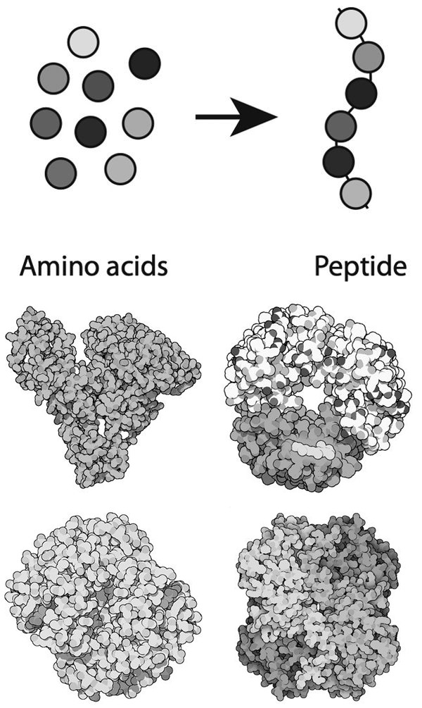
איור 4.1 חלבונים עשויים משרשראות של חומצות אמינו הנקראות פוליפפטידים (למעלה). בחלבוני אנזים, השרשראות הללו מתקפלות לצורות ייחודיות, שדוגמאות להן מוצגות כאן (למטה, משמאל לימין: אלבומין הסרום, בקטריורודופסין, המוגלובין, לקטט דהידרוגנאז). התמונות באדיבות דייוויד גודסל.
הריבוזום טווה החוצה את השרשרת הפוליפפטידית החשופה, שעבור חלבון בגודל אופייני מכילה כשלוש מאות חומצות אמינו (איור 4.2). לאחר מכן השרשרת רוכשת את צורתה המקופלת הודות לכמה סוגים של אינטראקציות כימיות. חלק מחומצות האמינו – המכונות "שיירים" כאשר הן משולבות בשרשרת פוליפפטידית – מכילות קבוצות כימיות המסוגלות ליצור את הקשרים הכימיים החלשים הנקראים קשרי מימן, אותם חיבורים עצמם הרוכסים יחדיו את הסליל הכפול של ה-DNA. חלק מהשיירים מכילים את החצי ה"תורם" של קשר כזה: אטום מימן בעל מטען חיובי קל. המימנים הללו יכולים להיצמד לישויות (אטומי חמצן או חנקן) בחצי ה"מקבל". חישבו על אלה כעל הקרסים והלולאות המשלימים של מעין צמדן (סקוטש) מולקולרי.
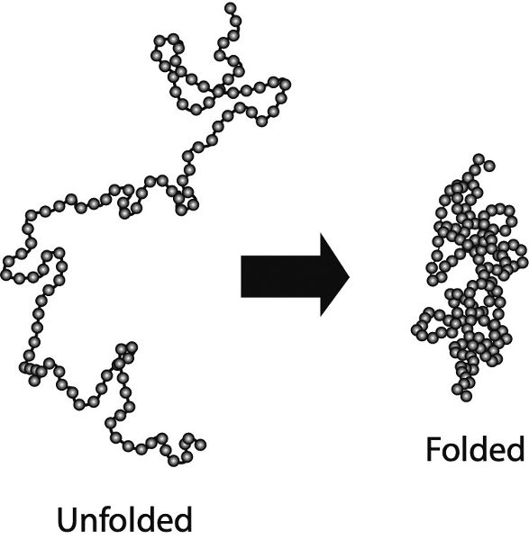
איור 4.2 קיפול של שרשרת פוליפפטידית לחלבון קומפקטי ופעיל.
מלבד קשרי מימן, הכוח המניע העיקרי הנוסף מאחורי קיפול חלבונים הוא המסיסויות השונות של חומצות האמינו השונות במים הממלאים את התא. חלק מחומצות האמינו מכילות קבוצות כימיות שאינן מתמוססות בקלות במים. אפשר לומר שהן "שמנוניות", או במונחים טכניים, הידרופוביות ("פוחדות ממים"). אחרות יכולות לקיים אינטראקציה מועדפת עם מולקולות מים, למשל באמצעות יצירת קשרי מימן עימן, ואלו מכונות הידרופיליות ("אוהבות מים"). שרשרת החלבון יכולה להנמיך את האנרגיה שלה ולהפוך ליציבה יותר אם היא מתקמטת כך שהשיירים ההידרופוביים תחובים ברובם פנימה בתוך הקפלים, מוסתרים מן המים, בעוד שהשיירים ההידרופיליים נמצאים בעיקר בחוץ. במקרה כזה, נראה כאילו השיירים ההידרופוביים חשים משיכה זה לזה, ולכן הם מתגודדים יחדיו. האמת היא ש"המשיכה ההידרופובית" הזו היא תופעה מורכבת שעדיין אינה מובנת במלואה, והיא כרוכה בדרכים שבהן מולקולות מים עשויות להסתדר בדפוסים שונים של קשרי מימן כשהן לעצמן או כשהן מקיפות מולקולה הידרופובית. ואולם, על אף נטייתם של שיירים הידרופוביים להימנע ממים, אחדים מהם נותרים בדרך כלל על פני השטח של החלבון. טלאים הידרופוביים כאלה יכולים להדביק חלבונים שונים זה לזה בקשר חלש: כאשר שני טלאים כאלה באים במגע, הם אינם חשופים עוד למים, ולכן שני החלבונים יציבים יותר כשהם מאוחדים מאשר כשהם נפרדים. לחלופין, אנו יכולים לחשוב על כך כעל שתי מולקולות הנדבקות זו לזו מכוח המשיכה ההידרופובית. זוהי דרך אחת שבה אופייה של הצורה המקופלת של החלבון יכול להכתיב את סוגי האינטראקציות שהוא מקיים עם חלבונים אחרים, ולאפשר להם להתקבץ לזוגות ולקבוצות גדולות יותר. קשרי מימן והמשיכה ההידרופובית נחשבים בדרך כלל לשני הכוחות המרכזיים המכתיבים כיצד חלבונים מתקפלים. חלקים מן השרשרת הפוליפפטידית יכולים גם להיות "מהודקים" יחדיו בסיכות על ידי סוגים אחרים של אינטראקציות כימיות, כגון קשרים כימיים בין אטומי הגופרית בשיירים של חומצת האמינו ציסטאין. בדרכים כאלה, השרשרת הפוליפפטידית מתקפלת לצורה כדורית (גלובולרית) מוגדרת למדי, יציבה וקומפקטית, המהווה את החלבון המתפקד. השאלה אילו חלקים של השרשרת מושכים או דוחים חלקים אחרים תלויה ברצף חומצות האמינו שלה, ולכן נדמה שהצורה המקופלת המדויקת מקודדת ברצף חומצות האמינו של הפוליפפטיד – ומכאן, באמצעות הקוד הגנטי, ברצף של הגן שממנו נגזר החלבון. אף שכל חלבון מתקפל בדרך שונה, רובם מכילים מבנים מקופלים חוזרים הנקראים מוטיבים, שהנפוצים שבהם הם סליל אלפא ומשטח בטא. בסליל אלפא, השרשרת מתפתלת לסליל הדוק, בדומה לקפיץ; היא מוחזקת יחדיו על ידי קשרי מימן המחברים פיתולים סמוכים. משטח בטא מכיל כמה גדילים המונחים במקביל זה לזה, ומזגזגים הלוך ושוב, כאשר כל גדיל מקושר לגדילים הסמוכים לו באמצעות קשרי מימן (איור 4.3). התהליך שבו השרשרת הפוליפפטידית של החלבון מתקפלת לצורתה הקומפקטית והפעילה מבחינה ביוכימית נחשב במשך זמן רב לאחת החידות העמוקות ביותר בביולוגיה המולקולרית. בשנת 1969 הצביע הביוכימאי סיירוס לוינתל על פרדוקס לכאורה בתהליך הזה של קיפול חלבונים. ברור שחלקים שונים רבים בשרשרת שאורכה כמה מאות שיירים עשויים לחוש מידה כלשהי של משיכה זה לזה: השרשרת יכולה להתקפל בדרכים מתקבלות על הדעת רבות. סביר להניח שרק לאחת מהן תהיה האנרגיה הנמוכה ביותר האפשרית – וזוהי צורת היעד של קיפול החלבון, הנקראת הקיפול הטבעי. אולם כדי למצוא אותה, הייתם מצפים שהשרשרת המתקפלת תיאלץ לנסות שפע של חלופות אחרות. הקונפורמציה המקופלת בעלת האנרגיה הנמוכה ביותר שלה (המונח הטכני לאופן המסוים שבו השרשרת מקומטת) עשויה אמנם להיות "מתוכנתת" בתוך רצף חומצות האמינו, אך השרשרת אינה "יודעת" שזהו יעדה המיועד. עליה למצוא את דרכה לשם בניסוי וטעייה. אנו יכולים לחשוב על הקונפורמציות האפשריות של השרשרת כמאכלסות מעין נוף אנרגיה, שבו הקונפורמציות היציבות יחסית מופיעות כשקעים וכעמקים (איור 4.4a). אי שם בנוף הזה נמצא מה שמכונה המינימום הגלובלי: קיפול היעד היציב ביותר. אך נראה כי החלבון ייאלץ למצוא את דרכו לשם באמצעות שיטוט אקראי ברחבי הנוף.
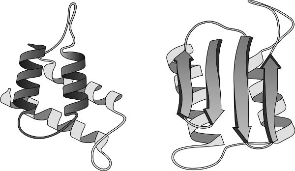
איור 4.3 מוטיבי הקיפול הנפוצים ביותר בחלבונים הם סליל אלפא (משמאל) ומשטח בטא (מימין). התמונה באדיבות Creative Proteomics, שירלי, ניו יורק.
כאשר העריך לוינתל כמה קונפורמציות מקופלות אפשריות זמינות לחלבון טיפוסי, הוא גילה שהמספר גדול במידה אסטרונומית. אני מתכוון לכך פשוטו כמשמעו: יש יותר קונפורמציות אפשריות מכפי שיש אטומים ביקום. הסיכוי ששרשרת מתקפלת תמצא את דרכה אל המינימום הגלובלי באמצעות בחינה אקראית של האפשרויות הוא למעשה אפס, גם אם היא מסוגלת לנסות, נאמר, קונפורמציה חדשה אחת בכל טריליונית השנייה.
ובכל זאת, חלבונים אכן מתקפלים כהלכה. ולא זו בלבד, אלא שאם פורשים אותם — המונח הטכני הוא דנטורציה (אל-טבעור) — למשל על ידי חימומם כך שהשרשרת מתנודדת בחוזקה רבה מדי מחמת החום מכדי להישאר ארוזה בצפיפות, חלבונים רבים יתקפלו מחדש באופן אמין אל הצורה הנכונה כאשר יקוררו לאחר מכן. כיצד זה קורה? כיום סבורים שנוף האנרגיה האמיתי של חלבון אינו דומה לזה שבאיור 4.4a, המכונה "מחוספס" (כמו נייר זכוכית). תחת זאת, יש לו צורת משפך (איור 4.4b): רחב בחלקו העליון והולך ונעשה צר יותר ויותר ככל שהשרשרת יורדת באנרגיה שלה. צורה זו מתעלת את תהליך הקיפול לעבר היעד הנכון. בהתחלה, כמעט כל קיפול מצוי בתוך הצוואר הרחב של המשפך. ככל שהקיפול מתקדם והחלבון מוצא את דרכו אל קונפורמציות יציבות יותר ויותר, הוא מתועל לעבר הקיפול הטבעי: טווח הקונפורמציות שהשרשרת יכולה לחקור נעשה מוגבל ומתוחם יותר ויותר.
דומה שהדבר מאשש את קביעתו של הביולוג הדרום-אפריקאי חתן פרס נובל סידני ברנר, שלפיה "כל שהיה עליך לעשות הוא להגדיר את רצף חומצות האמינו, והקיפול כבר היה דואג לעצמו."3 אם הקיפול הטבעי של חלבון אכן מוכתב כולו על ידי רצף חומצות האמינו שלו, אמור להיות אפשרי בעיקרון לפענח את הראשון מתוך האחרון (או למעשה, אולי מתוך רצף הגן המתאים).
היכולת לעשות זאת הייתה עשויה להיות מועילה לאין שיעור. במקום להידרש לשיטות ניסיוניות סיזיפיות כמו קריסטלוגרפיה של חלבונים (ראו להלן) כדי להסיק את המבנה, אפשר היה פשוט לחזות אותו במחשב עבור כל חלבון אם אנו יודעים את רצף חומצות האמינו של השרשרת. אך אף שחיזוי מבנה מתוך רצף חייב להיות אפשרי בעיקרון, לא הצלחנו לקבוע מהם הכללים. במשך שנים רבות, המיטב שיכולנו לעשות היה לבצע הדמיה של קיפול חלבונים במחשב: ליצור מודל של שרשרת החלבון הפרומה במים, להטמיע בו את כל מה שאנו יודעים על הכוחות הפועלים בין כל הרכיבים המולקולריים, ואז להריץ סימולציה כדי לראות כיצד השרשרת מתקפלת. שיטות כאלה דרשו כוח מחשוב עצום, וגם אז התוצאות לא היו אמינות במיוחד בדרך כלל.
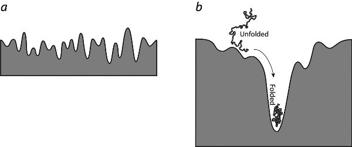
איור 4.4 נוף האנרגיה של קיפול חלבון. a: אילו הנוף היה מצוקי ומחורץ, עם עמקים רבים ופסגות בגובה דומה, היה נדרש לשרשרת פרושה זמן רב מאוד למצוא את העמק העמוק ביותר באמצעות שיטוט אקראי. b: בעיית חיפוש זו נעשית פתירה משום שהנוף אינו שטוח כל כך באמת, אלא דמוי משפך, הממקד במהירות את החיפוש בסביבה הנכונה.
כל זה השתנה כעת עם הופעתה של הטכניקה החישובית הקרויה למידת מכונה, שמוותרת על הניסיון למדל את הפיזיקה הממשית של התהליך ובמקום זאת פשוט נשענת על ידע קיים באשר למה שאנו רואים. בלמידת מכונה, אלגוריתם הקרוי רשת נוירונים "מאומן" באמצעות דוגמאות שהתשובה עבורן כבר ידועה, עד שהוא מסוגל לספק באופן אמין את התשובה הנכונה עבור דוגמאות (דומות) שלא ראה מעולם, על ידי הכללת מה שלמד במהלך תהליך האימון על המתאמים בין קלט לבין הפלט הנכון המתאים לו. אימון אלגוריתם למידת מכונה באמצעות כל מבני החלבונים שפוענחו עד כה בעזרת קריסטלוגרפיה אמור להקנות לו מיומנות בזיהוי אילו רצפים נוטים להניב אילו סוגים של מוטיבים מקופלים.
בשנת 2021 הכריז הצוות ב-DeepMind — חברת בינה מלאכותית בבעלות גוגל, שפיתחה קודם לכן תוכנות למידת מכונה המסוגלות להביס את השחקנים האנושיים הטובים ביותר במשחקים כמו שחמט וגו — על אלגוריתם לקיפול חלבונים בשם AlphaFold2, שהצליח לחזות מבנים ידועים בדיוק מרשים. בשנת 2022 אימן צוות AlphaFold את האלגוריתם באמצעות תת-קבוצה מתוך כ-170,000 מבני החלבונים הידועים, והשתמש בו כדי לחזות את המבנים של חלבונים אחרים על סמך הרצפים שלהם בלבד. במקרים רבים היו התחזיות מדויקות למעשה לא פחות מהמבנים שנקבעו בניסויים: 35 אחוזים הוגדרו כמדויקים ביותר, ו-45 אחוזים נוספים כטובים דיים לשמש מדריך אמין ליישומי מחקר רבים בביולוגיה. AlphaFold סיפקה תחזיות כמעט לכל החלבונים המוכרים כיום למדע הביולוגיה, למעלה מ-200 מיליון במספר, במינים הנעים מחיידקים ועד צמחים ובעלי חיים. "למעשה אפשר לחשוב על כך כעל כיסוי של יקום החלבונים כולו," אמר מנכ"ל DeepMind, דמיס האסאביס. "אנו ניצבים בפתחו של עידן חדש של ביולוגיה דיגיטלית."
למען הסר ספק, AlphaFold אינה פותרת ממש את בעיית קיפול החלבונים הידועה לשמצה בקושיה, אלא עוקפת אותה. האלגוריתם אינו מספק שום תחזית לגבי האופן שבו שרשרת פוליפפטידית מתקפלת, אלא פשוט חוזה את התוצאה הסופית על סמך הרצף. ובכל זאת, פריצת הדרך התקבלה בתשואות כמהפכה בחקר מבני חלבונים; היו שהשוו אותה לפרויקט הגנום האנושי. מה שעדיין נותר לראות הוא אם אמנם, כפי שהכריזו כותרות אחדות בתקשורת, היא תחולל תמורה בגילוי תרופות — או בהבנתנו הבסיסית את תפקידם של חלבונים באופן שבו החיים פועלים. בכל הנוגע לתכנון תרופות, ההתרגשות נובעת מן העובדה שתרופות רבות מבצעות את מלאכתן על ידי היקשרות לאנזים החשוד כמעורב במחלה והשבתתו או שינוי פעילותו בדרך אחרת. כדי לתכנן מולקולה שתיקשר לאנזים ותחסום את פעולתו, למשל, היכרות עם מבנה החלבון משמשת לעיתים קרובות מדריך טוב: היא יכולה לחשוף את צורת "החור" (בדרך כלל נקיק או חלל בפני השטח של החלבון) שלתוכו צריכה מולקולת התרופה להתאים. אולם תרופה טובה צריכה להיות גם בעלת "זיקת קישור" גבוהה לחלבון: נטייה להיצמד אליו בחוזקה. ואת זאת אי אפשר להסיק מהמבנה המולקולרי לבדו. יתרה מזו, אפילו תחזיות המבנה "הטובות" שמפיקה AlphaFold עלולות להחסיר את הפרטים העדינים הדרושים לחוקרים כדי לחזות או להבין במדויק את תפקודו של חלבון או את תכונות הקישור שלו.
זאת ועוד, תרופה היא הרבה יותר מאשר היכולת להיקשר לחלבון המטרה שלה. עליה להיות בעלת תכונות פרמקולוגיות טובות: הגוף צריך להיות מסוגל לספוג אותה ובהמשך לפנות אותה מן המערכת, למשל. רוב התרופות המועמדות (כ-85–90 אחוזים מהן) נכשלות בשלבים המאוחרים של הניסויים הקליניים, בדרך כלל משום שאינן פועלות היטב די הצורך — אולי אין להן השפעה רבה על הגוף גם אם הן פוגעות במטרה המיועדת להן — או משום שיש להן תופעות לוואי קשות. ידיעת מבנה החלבון אינה מסייעת לחזות גם את המכשולים הפוטנציאליים הללו. שיקולים כגון אלה מרמזים על הבעיות העמוקות יותר הכרוכות בניסיון לרפא מחלות באמצעות התמקדות בתכונותיהם ובהתנהגויותיהם של גנים בודדים או של ביו-מולקולות בודדות. אני בוחן דילמות כאלה בפרק 10.
תחזיות טובות של מבני חלבונים שלא היו ידועים עד כה (ללא צורך בשיטות ניסיוניות מפרכות שעשויות לדרוש שנות עבודה) עשויות בכל זאת להיות בעלות ערך רב להבנת המסלולים המולקולריים של החיים שבהם מולקולות אלה משתתפות. אולם גם כאן, המפתח לתפקידו של חלבון בתא אינו מקודד באופן אוניברסלי במבנה שלו. הרעיון הזה הוא עוד אחת מאותן "אמיתות מובנות מאליהן" שירשנו מראשית ימיה של הביולוגיה המולקולרית, והוא טעון עדכון. כדי להבין מדוע, עלינו להתבונן מקרוב במה שחלבונים באמת עושים, וכיצד.
מבנה ותפקוד במשך רוב המאה העשרים היה נדמה שמבנה הביו-מולקולות הוא המפתח שיפצח את סודות החיים. מבנה זה נחקר ברובו באמצעות קריסטלוגרפיה – שיטה שפותחה בעשורים הראשונים של המאה כדי לבחון את הסידור של גבישים בקנה מידה אטומי. קריסטלוגרפיה כרוכה בהקרנת קרני רנטגן על גבישים ובהתבוננות בתבניות שיוצרות הקרניים המוחזרות, שאותן אפשר ללכוד על גבי סרט צילום (או בימינו, באמצעות גלאי רנטגן משוכללים). תבניות התאבכות אלו, המכונות תבניות עקיפה (דיפרקציה), נוצרות כתוצאה מהתאבכות בין אלומות קרני הרנטגן הגליות כאשר הן מוחזרות משכבות שונות של אטומים המסודרים במרווחים קבועים בגביש. באמצעות ניתוח מתמטי של תבנית העקיפה אפשר לחשב את המרווחים בין שכבות האטומים – או, כאשר מנתחים זאת בכל שלושת הממדים, את מיקומיהם של כל האטומים. השיטה שימשה תחילה לחקר גבישים מוכרים כגון מלח בישול (נתרן כלורי) ויהלום, שבהם האטומים והיונים מסודרים בסריגים עצומים החוזרים על עצמם שוב ושוב. היא פועלת גם עבור מולקולות, בתנאי שהן ערוכות במערכים סדורים – כמו למשל מולקולות ה-H2O במים גבישיים (כלומר, קרח). חלוצי הקריסטלוגרפיה בקרני רנטגן הבינו כי יוכלו לפענח כיצד מסודרים האטומים במולקולות חלבון אם יצליחו לגרום למולקולות הללו ליצור גבישים. זוהי משימה קשה בהרבה מפענוח המבנה של מולקולות פשוטות וקטנות כמו מים. מולקולות חלבון הן עצומות ומבניהן סבוכים מאין כמותם, ולכן תבניות העקיפה שלהן קשות מאוד לפענוח. כיום אפשר לבצע את הפענוח הזה בעזרת מחשבים, אך כאשר החלה הקריסטלוגרפיה של חלבונים בשנות השלושים של המאה העשרים, לא עמד לרשות החוקרים סיוע כזה. ובכל זאת, עד שהצליחו רוזלינד פרנקלין ועמיתיה להפיק את תבניות העקיפה של DNA גבישי – אלו שסייעו לקריק ולווטסון לפענח את מבנה הסליל הכפול של המולקולה ב-1953 – מדענים אחרים, כגון הקריסטלוגרפים הבריטים דורותי הודג'קין וג'ון קנדרו, כבר החלו לפענח את הצורות הכלליות, גם אם עדיין לא את הפרטים האטומיים המדויקים, של חלבונים קטנים ופשוטים יחסית כמו אינסולין והמוגלובין. כיום שיטות קריסטלוגרפיות בקרני רנטגן מסוגלות להתמודד עם חלבונים עצומים, ואפילו עם מכלולים מורכבים מרובי-חלבונים. זוהי עדיין הדרך המרכזית לפענוח מבנה החלבון, אף שהטכניקות השתפרו לאין ערוך (בייחוד הודות למקורות של אלומות קרני רנטגן עוצמתיות במיוחד). במאגר הנתונים הבין-לאומי המרכזי, בנק נתוני החלבונים (Protein Data Bank), מתועדים כיום כשישים וחמישה אלף מבני חלבונים, ועל פי ההערכות המספר הכולל של מולקולות ביולוגיות שמבניהן פוענחו בשיטות אלו עולה על מאה וחמישים אלף. קריסטלוגרפיה אינה הדרך היחידה לפענח את מבניהן של מולקולות מורכבות. טכניקה חדשה ומועילה במיוחד נקראת מיקרוסקופיית אלקטרונים קריוגנית (cryo-EM), והיא עושה שימוש באלומות של אלקטרונים במקום באור כדי להפיק תמונות מפורטות להפליא של המולקולות. מיקרוסקופיית אלקטרונים קיימת מאז שנות השישים של המאה העשרים, ובכוחה להבחין בפרטים עדינים יותר מאשר מיקרוסקופ אור, משום שאורך הגל של אלומות אלקטרונים – חלקיקים יסודיים אלה יכולים, על פי פיזיקת הקוונטים, להתנהג כאילו היו גלים – קצר מזה של האור הנראה. בקירוב ראשון, גודלם של עצמים שמיקרוסקופ מסוגל להפריד ביניהם דומה לאורך הגל של הקרינה שהוא מאיר בה את הדגימה. מיקרוסקופים אופטיים אינם יכולים לספק תמונות חדות של עצמים הקטנים ממיקרומטר אחד לערך – גודל הגדול בהרבה מזה הדרוש להצגת חלבונים בודדים – ואילו מיקרוסקופי אלקטרונים יכולים ליצור תמונות ברזולוציה עדינה כמעט כמו גודלם של אטומים בודדים.4 במיקרוסקופיית cryo-EM מקררים את הדגימה לטמפרטורות נמוכות מאוד, הן כדי להקפיא כל תנועה מולקולרית (שעלולה לטשטש את התמונות) והן כדי לצמצם את הנזק שאלומת אלקטרונים עתירת אנרגיה מסבה לחומר עדין כמו ביו-מולקולה. יכולותיה של טכניקת ה-cryo-EM משתפרות בהתמדה, במידה רבה הודות למאמציהם של שלושת המדענים שזכו בפרס נובל לכימיה לשנת 2017 על עבודתם: ז'אק דובושה, יואכים פרנק וריצ'רד הנדרסון. התפיסה הרווחת זה שנים רבות היא שמבנה החלבון מכתיב את תפקודו. בדרך כלל לאנזים יש רק תפקיד אחד, והוא מעוצב כך שיהיה מצוין בביצועו. אלכוהול דהידרוגנאז, למשל, תולש אטום מימן ממולקולות אלכוהול. זה הכול: הוא נתקל במולקולת אלכוהול, נקשר אליה, שולף ממנה אטום מימן, ואז משחרר את מולקולת התוצר. ליזוזים, אנזים פשוט יחסית שהפך לאב-טיפוס להבנת תפקודם של חלבונים, מצוי ברוק ובחלב ומסייע להילחם בזיהומים חיידקיים באמצעות גזירת מולקולה הקרויה פפטידוגליקן בדפנות תאי החיידקים. אנזימים הם מומחים כימיים. חלבונים מסוימים משובצים בקרומי התאים (הממברנות) במקום לצוף כישות כדורית מומסת בנוזל הציטופלזמה של התא. לחלבוני ממברנה אלה יש לרוב יחידת עיגון שבה השיירים החשופים הם הידרופוביים, כך שעדיף למקטע זה להשתקע עמוק בפנים הממברנה, המכילה קבוצות הידרופוביות אחרות על גבי מולקולות השומן (הליפידים) המרכיבות אותה. "ראש" מסיס בולט החוצה מן הממברנה. גם חלבונים אלה עשויים להיות אנזימים המבצעים מלאכה כלשהי, כגון קשירת מולקולת הורמון מחוץ לתא ובתגובה לכך העברת אות למולקולות אחרות בצידו הפנימי של התא. סינתאז ATP הוא חלבון כזה (איור 4.5). חלבון זה, המהווה דוגמה מובהקת למטאפורת "החלבון כמכונה מולקולרית", מסובב את ראשו כמו מנוע בשעה שהוא מבצע את מלאכתו הקטליטית ומייצר מולקולות ATP. חלבונים אחרים הם מבניים: הם אינם מתפקדים כאנזימים, אלא כמרכיבים במארג של התא. מולקולות אלו אינן נוטות להתקפל לכדי גושים כדוריים, אלא שוזרות או מדביקות את השרשראות שלהן זו לזו ליצירת מבנים סיביים. הן אבני הבניין של שיער, עצם, טופר ומשי (איור 4.6). במהלך שנות השישים של המאה העשרים, בייחוד הודות לעבודתם של הביולוגים המולקולריים וולטר גילברט ומארק פטשנה, התברר כי חלבונים מסוימים אינם פועלים לזירוז תגובות כימיות אלא לבקרה על גנים. ראינו קודם לכן שהחלבון החיידקי Lac1 הוא אחד מאלה: הוא מדכא את הגנים המקודדים אנזימים מעכלי לקטוז. בקרוב נראה כיצד פועלים כמה מחלבוני הבקרה הללו. חלבונים רבים עוברים התאמות כימיות לפני שהם יכולים למלא את תפקידם. במילים אחרות, אנזימים אחרים תופרים אל השרשרת המקופלת קבוצות כימיות שאינן עשויות מחומצות אמינו כלל. חלק מהקבוצות הנוספות הללו מכילות יוני מתכת כגון ברזל, נחושת או קובלט, המצטיינים בסיוע לתגובות כימיות. חלבון ההמוגלובין, לדוגמה, מכיל בליבתו קבוצת הֵם (heme) שבה אטום ברזל יושב במרכזה של טבעת העשויה מאטומי פחמן וחנקן. הברזל יכול ליצור קשר כימי עם חמצן, וכך ההמוגלובין יכול להוביל אותו במחזור הדם ולהביאו אל המקומות שבהם אפשר להשתמש בו כדי "לשרוף" סוכרים ולהפיק אנרגיה. כמו חלבונים רבים, ההמוגלובין מבצע את תפקידו בתוך מכלול שבו הוא צמוד לחלבונים אחרים – במקרה זה, לשלושה חלבונים זהים. תוספת כימית נפוצה אחרת לשרשרת הפוליפפטידית היא מולקולות סוכר, שלרוב קשורות בעצמן בשרשראות קצרות. חלבונים מעוטרי-סוכר כאלה נקראים גליקופרוטאינים, והם מרכיבים חשובים במיוחד של מערכת החיסון, כגון נוגדנים והסמנים המולקולריים הקובעים את סוגי הדם.
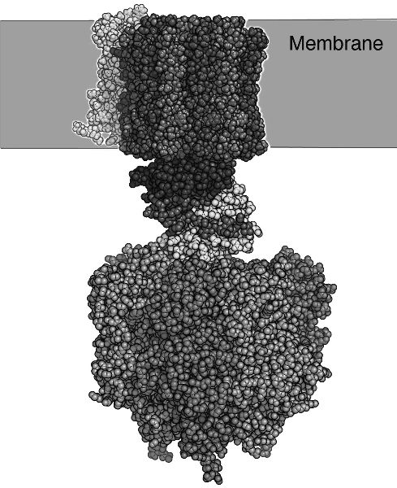
איור 4.5 סינתאז ATP הוא חלבון ממברנה המזרז את יצירת "מולקולת האנרגיה" ATP. ה"גבעול" יושב משובץ בתוך קרום התא, בעוד ה"ראש" הבולט מבצע את הקטליזה.
האמונה שהתפקוד נגזר מן המבנה הייתה מובלעת בטענתו של פרנסואה ז'קוב מ-1970, שלפיה "מטרת הביולוגיה המודרנית היא לפרש את תכונות האורגניזם באמצעות *המבנה* של המולקולות המרכיבות אותו" (ההדגשה שלי). קשה להיות רדוקציוניסטי יותר, ואפילו אפלטוני יותר, מזה: איננו שואפים אפילו לפרש את הביולוגיה באמצעות מה שהמרכיבים הללו עושים, או מתי, או באיזה סדר, אלא אך ורק באמצעות צורתם הסטטית! הדבר מזכיר את הערתו שהוזכרה לעיל של רוברט רוזן על כך ש"משליכים את הארגון ושומרים את החומר שבבסיסו".
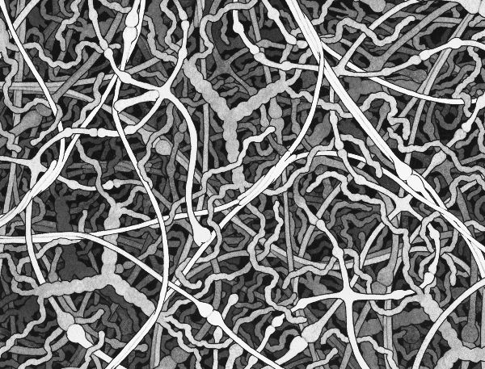
איור 4.6 ייצוג של הרשת שיוצר החלבון המבני הסיבי קולגן, שהוא מרכיב עיקרי ברקמות חיבור כגון סחוס, גידים ועור. התמונה באדיבות דייוויד גודסל (David Goodsell).
לפי תפיסה קנונית זו, אנזים, בעל רצף חומצות אמינו (ומכאן גם מבנה) המקודד על ידי גן, פועל כמו מרכיב רובוטי המזיז ומסדר מחדש את האטומים של הסובסטרט (המצע) שלו, ויוצר ומפרק קשרים כימיים בדיוק מופתי. אבל אם נציץ אל תוך התא, נראה ביצה טובענית של חלבונים ומולקולות אחרות הדחוסים יחד בערבוביה גועשת. כיצד, בתוך כל ההמולה הזאת, מוצא החלבון את המולקולה הנכונה שעליו להתמיר? התשובה המקובלת היא שהחלבון מעוצב בצורה מושלמת המאפשרת לו לזהות את הסובסטרט שלו ולהתעלם מכל השאר. לרוב האנזימים יש אזור הנקרא האתר הפעיל – חריצים או חללים בפני השטח – שבו נקשר הסובסטרט בזמן שחלקים סמוכים של השרשרת הפוליפפטידית מבצעים את ההתמרה הכימית. בניסוח גס, נהוג לחשוב שהאנזים מקיים אינטראקציה עם הסובסטרט כמו מנעול שרק המפתח הנכון מתאים לו. תופעה זו מכונה הכרה מולקולרית, והסברה היא שהיא מאפשרת לתזמר את זרימת החומר, האנרגיה והמידע בתא לאורך שרשראות מוגדרות היטב של אינטראקציות מולקולריות.
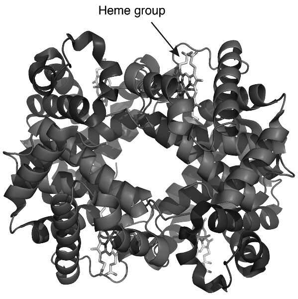
איור 4.7 חלבון ההמוגלובין מכיל בליבתו קבוצה המכונה קבוצת הֵם, שבה אטום ברזל המסוגל לקשור מולקולות חמצן. מכלול ההמוגלובין השלם מכיל ארבעה חלבונים נפרדים, המסודרים כשני זוגות קרובים מאוד זה לזה. שימו לב לסלילי האלפא במבנים אלה. התמונה באדיבות ריצ'רד וילר (Zephyris) מוויקיפדיה האנגלית. אף שהתא הצפוף עשוי להיראות כמו מועדון ריקודים מולקולרי כאוטי, שבו נרקמים בשוליים כל מיני קשרים מפוקפקים, שאבנו נחמה מן הרעיון שכל חלבון יודע בדיוק מה עליו לעשות ואת מי עליו לפגוש, מכוח צורתו המקופלת ויכולת ההכרה המולקולרית הנובעת ממנה, ושהוא מתייחס לכל השאר כאל לא רלוונטיים. אולם האם זהו תמיד הסיפור הנכון?
חיבורים זה מכבר ידוע כי יכולתם של חלבונים מסוימים להתמיר את הסובסטרט שלהם עשויה להיות מושפעת מגורם שלישי: מולקולה אחרת. הרמז הראשון לסיבוך כזה היה התגלית משנת 1904 של הרופא הדני כריסטיאן בוהר (אביו של הפיזיקאי המפורסם נילס בוהר), ולפיה קשירת החמצן על ידי המוגלובין מושפעת מנוכחותו של פחמן דו-חמצני. בשנת 1961 טבעו מונו וז'קוב את המונח אלוסטריה (שמשמעו "צורה אחרת") כדי לתאר כיצד האינטראקציה של חלבון עם מולקולה אחת (שותפי קישור כאלה מכונים בדרך כלל ליגנדים) יכולה להשפיע על האינטראקציה שלו עם מולקולה אחרת. לדוגמה, אנזים שמתמיר את ליגנד A עשוי להיות בלתי פעיל עד שהוא קושר את ליגנד B, ואז הוא נעשה מסוגל להמיר את A לתוצר כלשהו P. נהוג לחשוב שהדבר נובע משינוי צורה בחלבון: עגינתו של B עשויה, למשל, למשוך ולפתוח אתר פעיל שמתחיל אז במלאכת ההמרה של A ל-P (איור 4.8). אפשר לראות בתהליכים כאלה משהו שדומה מעט למתגים ולשערים הלוגיים של המחשוב הקונבנציונלי, כאשר הליגנדים של החלבון משמשים כקלט והתוצר (או התוצרים) של התגובה משמשים כפלט: אם (ורק אם) גם A וגם B נוכחים, אזי התוצאה היא התוצר P. אופרון הלקטוז (lac) שזיהו מונו וז'קוב היה מעין מתג של גן, שבו פעולתו של חלבון הדכאן Lac1 מופעלת או מכובה באמצעות קשירת מולקולת סוכר. מיתוג כזה יכול להתרחש באופן אלוסטרי גם בין שני חלבונים: האחד עשוי להיקשר לאחר ולהשפיע על פעילותו, ובכך לקשר את שרשרת ההתמרות הכימיות שהם משתתפים בהן לרשתות שלובות זו בזו. בעיני מונו, האלוסטריה הייתה "הסוד השני של החיים". אחת הדוגמאות הנפוצות ביותר למיתוג אלוסטרי מתרחשת באנזימים חלבוניים הנקראים קולטנים המצומדים לחלבון G (GPCRs), היושבים משובצים בקרומי התאים ומתרגמים אות שמגיע מחוץ לתא לתגובה בתוכו. הם מעורבים בפעולתם של הורמונים — מולקולות קטנות המתדפקות על צידם החיצוני של תאים כדי לחולל תגובה פיזיולוגית בפנים — וכן בחוש הריח (שבו הגורם המפעיל הוא מולקולת ריח), ברגישות לאור (שבה הגורם המפעיל הוא פוטון של אור), ובפעולתן של מולקולות מוליכים עצביים בסינפסות עצביות.
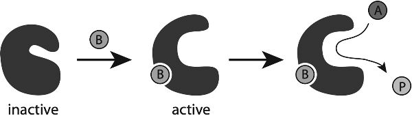
איור 4.8 התפיסה המקובלת של אופן פעולת האלוסטריה בחלבונים. קשירתו של ליגנד B גורמת לשינוי צורה בחלבון, המעביר אותו לצורה הפעילה המסוגלת להתמיר את A ל-P.
לחלבונים אלה יש אתר קישור בצד החשוף אל מחוץ לתא, שלתוכו יכולה לעגון מולקולת האיתות, כגון הורמון. הדבר משרה שינוי צורה כלשהו המפעיל את החלבון בצד הפונה אל פנים התא, והופך אותו מסוגל לקיים אינטראקציה עם חלבון אחר הצמוד למשטח הפנימי של הקרום, הנקרא חלבון G. חלבון G מופעל כך כדי להפעיל חלבונים אחרים הצפים בחופשיות בתא, ובכך פותח מפל של אירועים שבאמצעותו האות המיוצג על ידי ההורמון מועבר הלאה, או עובר "התמרת אות" (איור 4.9). בדרך כלל, מסלול ה-GPCR מפעיל אנזימים הנקראים חלבון קינאזות, המפעילים אנזימים אחרים באמצעות שינוי כימי שלהם. חלבון קינאז נוטל יון זרחה מ"מולקולת האנרגיה" של התא, ATP, ומחבר אותו לחלבון אחר, לרוב לאחת משתי חומצות אמינו (סרין או תראונין) בשרשרת הפוליפפטידית של חלבון המטרה שלו. במצב זה אומרים על חלבון המטרה שהוא מזורחן. חלבון קינאזות הן משפחה גדולה למדי של חלבונים. יש כחמש מאות מהן בתאי אדם, והן מקודדות על ידי כ-2 אחוזים מהגנים המקודדים לחלבון שלנו. וכמעט מחצית מהחלבונים שלנו מסוגלים לעבור זרחון, חלקם בכמה אתרים שונים שעשויים להיות נגישים לחלבון קינאזות שונות. לכן אין זה רק עניין של חלבון מזורחן שנמצא במצב "מופעל" או "כבוי". אפשר להפעיל אותם בהדרגה, ובאופן שיתופי: קינאזות מסוימות עשויות לחבר את קבוצת הזרחה שלהן רק לחלבוני מטרה שכבר מחוברות אליהם קבוצות זרחה אחרות. משמעות הדבר היא שלמסלולי התמרת אותות כאלה עשויה להיות לוגיקה מורכבת למדי. יתרה מזו, ישנם אנזימים אחרים הנקראים פוספטאזות, שתפקידם לקצוץ קבוצת זרחה בחזרה מעל חלבון אחר. באופן זה, חלבון קינאזות ופוספטאזות יכולים לווסת את פעילותם של אנזימים אחרים באופן מחזורי (איור 4.10).
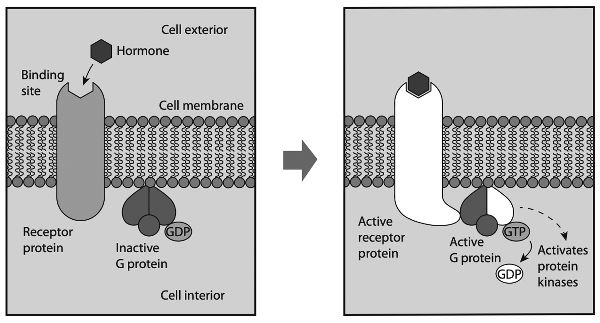
איור 4.9 אלוסטריה בפעולתו של קולטן המצומד לחלבון G, שבדרך כלל מחולל מפל של אינטראקציות המערבות אנזימים הנקראים חלבון קינאזות. GDP ו-GTP הן מולקולות קטנות המומרות זו לזו על ידי אנזימים בתהליכי איתות אלה.
תפקידם של קולטני GPCR בהתמרת אותות הובהר בשנות השבעים של המאה העשרים על ידי הביוכימאים אלפרד גילמן ומרטין רודבל, שזכו על עבודתם בפרס נובל לפיזיולוגיה או לרפואה לשנת 1994. בתחילה נתפסו קולטני GPCR כמתגי הפעלה-כיבוי פשוטים, המופעלים על ידי שינוי אלוסטרי בקונפורמציה — תמונת מכונה שבה מולקולת החלבון דומה למערכת של מנופים וגלי פיקות נעים. דחפו או משכו כאן, ושינוי מוגדר וצפוי יתרחש שם. אבל מולקולות אינן כאלה. הניסיון ליצור "מכונה" משרשרת פוליפפטידית מפותלת דומה מעט לניסיון ליצור מכונה מגומי: היא רכה, ניתנת לעיוות, וברמה המולקולרית — מתנודדת בפראות בגלל אנרגיית החום שלה עצמה והפגיעות האקראיות במולקולות הממס המימי שלה ובשכנותיה. כפי שאומר הביולוג דניס בריי, "כל מולקולה בודדת היא הפכפכה ובלתי אמינה מטבעה, ונשלטת על ידי אנרגיה תרמית".
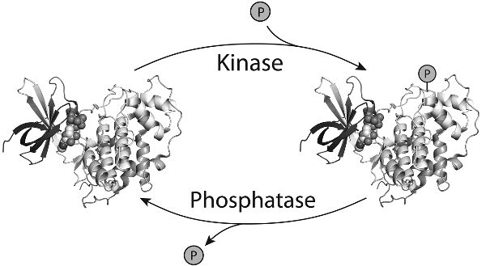
איור 4.10 זרחון של חלבון על ידי קינאז, ודה-זרחון על ידי אנזים פוספטאז. כאן "P" מייצג קבוצת זרחה.
אך ישנה סיבה נוספת לכך שרבים מהחלבונים שלנו אינם מנעולים דמויי-מכונה המתאימים למפתחות ספציפיים — ולכך שלפיכך אי אפשר להבין את האינטראקציות האלוסטריות היוצרות רשתות של אינטראקציה ובקרה במונחים של מיתוג מכני מדויק. הסיבה היא שרבים מהם, או חלקים רבים מהם, למעשה אינם מובנים כלל.
אי-סדר אני מכנה את התמונה שלעיל של מבנה החלבון ותפקודו "קנונית", משום שבמשך זמן רב היא נחשבה לאלף והתו של החלבונים, ותומצתה בכלל שלפיו "הרצף מכתיב את המבנה שמכתיב את התפקוד". המפתח לאופן שבו חלבונים פועלים, לפי השקפה זו, טמון באדריכלות המולקולרית המופלאה שלהם. אולם במהלך שני העשורים האחרונים התברר שזוהי תמונה חלקית בלבד: היא תקפה לגבי חלבונים מסוימים (במידה מסוימת), אך כלל לא לגבי אחרים. והיא כושלת עבור כמה מאותם חלבונים שהם החשובים ביותר לאופן שבו התאים שלנו פועלים ולאופן שבו גופנו ובריאותנו מווסתים בקנה המידה המולקולרי. לתפיסה הרווחת שלפיה המדע הוא תהליך החקירה של טבע העולם יש להוסיף סייג חשוב: המדע נוטה להיות חקר מה שאנו יכולים לחקור. המיקוד שלו מוטה לעבר אותם היבטים של העולם שעבורם יש לנו כלים ניסויים ומושגיים. היצורים הנפוצים ביותר על פני כדור הארץ — חיידקים וארכאונים חד-תאיים — לא רק שלא נחקרו אלא אף לא היו מוכרים כלל, עד שבשלהי המאה השבע-עשרה פותחו מיקרוסקופים בעלי כושר הפרדה מספק כדי לראותם. נגיפים, בהיותם קטנים עוד יותר, לא התגלו במשך מאתיים שנה נוספות. כך שבמשך רוב ההיסטוריה היו הזואולוגים, על אף להטם וחריצותם, בורים בנוגע לרוב הביוספרה. המצב אינו שונה היום: לא זו בלבד שאנו מוגבלים על ידי הכלים שלנו, אלא שמגבלה זו מעוותת את תפיסתנו באשר לאופן שבו העולם, והחיים, פועלים. אפשר לחקור חלבונים באמצעות קריסטלוגרפיה רק אם ניתן ליצור מהם גבישים. גם כיום יש בכך משום אומנות נסתרת: לנסיינים מסוימים יש כישרון טבעי לגיבוש חלבונים, ממש כפי שלגננים מסוימים יש "אצבעות ירוקות". אך חלבונים מסוימים מסרבים להתגבש, מוכשרים ככל שתהיו. הדבר נכון במיוחד לגבי החלבונים שמבצעים את עבודתם כשהם משובצים בחלקם בקרומי התאים, מה שאומר שיש להם גבעול עיגון שאינו מסיס במים. אחד היתרונות הגדולים של מיקרוסקופיית אלקטרונים קריוגנית (cryo-EM) הוא שהיא אינה דורשת גבישים, ולכן היא ברכה של ממש לאפיון הביומולקולות העקשניות הללו. ואף על פי כן, הרוב המכריע של מבני החלבונים שהושגו עד כה הם של חלבונים שיוצרים גבישים — וזוהי בשום אופן לא כלל אוכלוסיית החלבונים. הדיוקנאות שיש לנו של חלבונים אינם מייצגים. מכיוון שחלבונים רבים אינם יוצרים גבישים, אנו יודעים את המבנים של כ-50 אחוזים בלבד מהפרוטאום האנושי (כלומר, מכלל החלבונים שלנו). השאר הם בגדר תעלומה, המכונה לעיתים "הפרוטאום האפל". לרבים מאלה יש רצפים שאינם נראים כמו רצפים של חלבונים מוכרים, ולכן קשה לנחש כיצד הם מתקפלים.5 בין החלבונים שאינם מתמסרים לאנליזה מבנית ישנם רבים שפשוט אין להם צורות מקופלות מוגדרות היטב. במקום זאת, חלקים מהשרשראות הפוליפפטידיות שלהם רפויים ומידלדלים — "בעלי אי-סדר אינהרנטי", בז'רגון של התחום (איור 4.11). חלבונים בעלי אי-סדר אינהרנטי אינם מחויבים בחוזקה ל"צורה" מסוימת: בניגוד לחלבונים גלובולריים מסורתיים, שבהם יש צורה מקופלת יציבה וייחודית שלתוכה מתועלת השרשרת הקורסת דרך "משפך אנרגיה" רחב (איור 4.4b), נוף האנרגיה שלהם משונן ומחוספס באופן אקראי יותר (בדומה במקצת לאיור 4.4a), עם כמה קונפורמציות מתחרות שהם עשויים לאמץ. זוהי תופעה נפוצה למדי: הערכה אחת מעמידה את שיעור המקטעים הבלתי מסודרים בפרוטאום האנושי כולו על 37–50 אחוזים. יתרה מזו, נראה שאי-סדר שכיח במיוחד ברבים מהחלבונים החשובים ביותר באקולוגיה המולקולרית של התא. נראה שזהו מאפיין של פרוטאומים של רב-תאיים (מטזואה) בפרט: חלבונים בעלי אי-סדר אינהרנטי מהווים רק כ-4 אחוזים מפרוטאומים רבים של חיידקים. הבדל זה הוא רמז נוסף לכך שתאים אנושיים אינם פועלים באמת כמו תאי חיידקים. חלבונים בלתי מסודרים אינם יכולים להתקשר עם מולקולות אחרות בספציפיות של מנעול ומפתח. רבים מהם ייקשרו לשלל מולקולות אחרות, ובכלל זה לחלבונים אחרים — הם עשויים לגלות מידה מסוימת של העדפה לסובסטרט מסוים, אך לא באופן בלעדי. לעיתים קרובות עצם אירוע הקישור מעניק לחלבונים כאלה צורה מקופלת ומסודרת יותר: הם "מתקפלים בעת הקישור" לצורה התלויה בשותף. אם כן נחקור את מבנה החלבון כשהוא קשור לסובסטרט, הוא ייראה מסודר כמו כל חלבון אחר. ואולם אותה צורה מקופלת תהיה שונה עבור שותפי קישור שונים. חלבונים בלתי מסודרים אחרים נותרים בלתי מובנים בעקשנות גם כאשר הם נקשרים, ונצמדים כמעין אמבה ליצירת חיבורים משתרעים ומטושטשים.
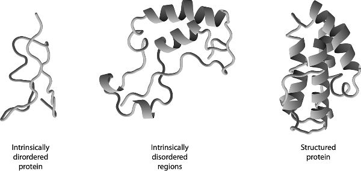
איור 4.11 אי-סדר אינהרנטי בחלבונים. חלבונים מסוימים הם כמעט לחלוטין בלתי מסודרים ואין להם מבנה יציב יחיד (משמאל). לאחרים יש אזורים משמעותיים בשרשרת המקופלת שלהם שאינם מסודרים (באמצע), בשילוב עם כיסי סדר כגון סלילי אלפא. לעומת זאת, לחלבון מסודר יש בדרך כלל מבנה יחיד מוגדר היטב (גם אם גמיש במידת מה) (מימין). התמונה עובדה על ידי המחבר מתוך Musselman and Kutateladze 2021.
אופן אינטראקציה זה נראה כהיפוכו הגמור של מה שנהוג ללמד בביולוגיה מולקולרית: שחלבונים וביומולקולות אחרות נוטים ליצור שותפויות ספציפיות ביותר, המשולבות זו בזו. ככל שאנו מתבוננים יותר, כך נראה שהסיפור המסודר הזה על היכרות מולקולרית בתא נובע מהעובדה שקל לספר אותו ולתפוס אותו באינטואיציה, ושתשומת ליבנו נמשכה אל חלבונים המתאימים לסיפור, יותר מכפי שזוהי הדרך שבה החיים פועלים בפועל בקנה מידה זה. עמימות וחוסר דיוק אינם רק נפוצים; הם מאפיינים של כמה מהזיווגים המולקולריים החשובים ביותר בתא. רבים מהחלבונים הממלאים תפקידים מרכזיים בתזמור אירועים מולקולריים בתאים שלנו נראים כאילו עוצבו במפורש על ידי האבולוציה להיות מתירניים, ולקשור כמה שותפים דומים בשקיקה שווה פחות או יותר. אין זו טעות או מגרעת של האבולוציה, אלא תכונה מכוונת. הדבר משתקף באופן שבו לחלבונים בעלי אי-סדר אינהרנטי יש ככל הנראה סוגים ייעודיים של אי-סדר — לא כולם אותו סוג של בלגן. הביופיזיקאי רוהיט פאפו זיהה ארבע מחלקות מובחנות של אי-סדר, החל בשרשראות פתוחות וחסרות צורה פחות או יותר ועד למבנים קומפקטיים יחסית, דמויי גושים רפויים. הבדלים אלה משתקפים ברצף חומצות האמינו של החלבון, והם קשורים לתפקודו של החלבון. לדוגמה, נראה שכדוריות קומפקטיות נקשרות ביעילות ל-DNA, כאשר הקרבה בין החלקים השונים של השרשרת מסייעת ליצור אינטראקציה חזקה במשותף. אי-הסדר וקשירת הליגנדים המתירנית של חלבונים אנושיים רבים אינם אומרים רק שהמנגנונים המולקולריים של התאים שלנו מבולגנים ומשוחררים מעט יותר מכפי שחשבו. משתמע מכך שכל הלוגיקה של האופן שבו מידע מועבר ברחבי התאים מחייבת חשיבה מחדש. בפרק הבא נראה איזו צורה עשויה ללבוש בחינה מחודשת זו, אך אומר כבר עתה כי אין זה מקרה שהתמורה הזו באופן שבו אנו חושבים על האינטראקציות בין מולקולות התרחשה בד בבד עם הצורך לשנות את השקפתנו על בקרת גנים ועל תפקידי ה-RNA. שכן השניים מתלכדים לתמונה קוהרנטית של האופן שבו תאים פועלים באמת: אי אפשר לקבל את האחד בלי האחר. הגמישות הקונפורמטיבית שמעניק אי-הסדר מדגישה עד כמה חשובים שינויי הצורה לאופן פעולתן של מולקולות אלה. את עצם המושג "מבנה חלבון" מוטב אולי לראות כמערכת של קונפורמציות, בדומה לתנוחות הכוריאוגרפיות שביניהן נע רקדן ללא הרף. אין כל ערובה לכך שהתנוחה המאומצת במבנה גבישי היא זו החשובה ביותר לתפקודו (או לתפקודיו) הביוכימיים. לדוגמה, לאנזימים רבים יש לולאות בשרשרת הפוליפפטידית המשתלשלות סביב האתרים הפעילים שלהם או מעליהם, שם הם קושרים ומתמירים את מטרות הליגנד שלהם. הלולאות גמישות ביותר ויכולות ליצור קונפורמציות שונות של האתר הפעיל בעלות תכונות ותפקודים מובחנים, כגון זיקה לליגנדים שונים. הדבר מאפשר לחלבונים לבצע יותר מתפקוד אחד ויכול לסייע בפיתוח אבולוציוני של תפקודים חדשים. חוקרים הצליחו לשנות את תפקודיהם של אנזימים ולהעניק להם תפקידים חדשים, פשוט על ידי שינוי תנועות הלולאות וכוונון עדין של נוף הקונפורמציות כתוצאה מכך. בתוך כך, לא זו בלבד שאי-סדר מבני אינו מעכב אלוסטריה, אלא נראה כי הוא גורם מפתח המאפשר אותה. הביוכימאים וינסנט הילסר ובראד תומפסון הציעו כי אי-סדר הוא דרך טובה יותר להבטיח ששינוי בחלק אחד של חלבון יורגש בחלק אחר, משום שהוא אינו דורש "הנדסה" מדויקת של מנגנון שיצמד ביניהם. קשירה של ליגנד מייצרת תזוזות עדינות בקונפורמציות הרבות והשונות שלחלבון בלתי מסודר יש גישה אליהן, ואלה יחד "מפיצות את הבשורה". הרפיון הופך חלבונים כאלה לא רק למסוגלים לקשור כמה ליגנדים שונים, אלא גם לרגישים באופן מהותי ונרחב למה שמתרחש בחלקים שונים של המולקולה, כך שלאירוע הקישור עשויות להיות השלכות שרשרת. באופן זה, חלבונים בלתי מסודרים יכולים להפוך ל"מחברים" רב-תכליתיים בין שרשראות שונות של אינטראקציה המעבירות אותות בתא, מה שהופך אותם לצמתים מצוינים ברשתות האינטראקציות המולקולריות המעורבות בהתמרת אותות ובבקרה. אף על פי — ולמעשה, בדיוק משום — שחלבונים בעלי אי-סדר אינהרנטי מקיימים אינטראקציה חלשה וחולפת בלבד עם מולקולות רבות אחרות, אומרת חוקרת הסרטן הפולנייה אווה גז'יבובסקה, הם מאפשרים לתאים להגיב במהירות לשינוי בנסיבות, ומעניקים גישה למגוון רחב של מסלולים אפשריים להעברת אותות ולהכוונתם, מסלולים שאינם — וזהו דבר מכריע! — מתוכנתים מראש במערכת. חלבונים בלתי מסודרים הם גם מתקשרים רב-תכליתיים במסלולי איתות משום שאת צורתם הרפויה ניתן לשנות בקלות באמצעות זרחון. קבוצות זרחה טעונות במטען שלילי ודוחות זו את זו, ולכן הן יכולות להעניק דחיפה במיקומים שונים בחלבון הרפוי כדי לעצב אותו מחדש ולהקנות לו נטיות קישור שונות. אפשר לומר שאי-הסדר הופך את החלבון לנוח מאוד להשפעה במציאת צורות ותפקודים חדשים. אי-סדר בחלבונים קשור לעובדה שחלבונים מסוימים יכולים לאמץ יותר מצורה יציבה אחת. לדוגמה, אנזים קומפקטי הנקרא טאו (tau), המסייע בשמירה על יציבותם של תאי עצב במערכת העצבים המרכזית, יכול לארגן את עצמו מחדש לסבכים סיביים שהוצעו כגורם מעורר למחלת אלצהיימר בכך שהם גורמים למותם של תאי עצב במוח. "קיפול שגוי" זה מזכיר את זה הנראה בחלבונים הנקראים פריונים, הקשורים למחלות ניווניות אחרות של מערכת העצבים. חלבוני פריון (PrPs) יכולים לחולל שורה של הפרעות מוחיות קרובות זו לזו בבני אדם ובבעלי חיים אחרים, ובהן אנצפלופתיה ספוגית של הבקר (BSE) בבקר, סקראפי (scrapie) בכבשים, ומחלת קרויצפלד-יעקב (CJD) בבני אדם. גם כאן, הסברה היא שמצבים אלה נובעים מהצטברות החלבון המקופל באופן שגוי לסבכים הרעילים לתאי העצב. כל הפריונים הם צורות של חלבון יחיד, המסומן כ-PrPC ונמצא בקרומי התאים. זהו למעשה גליקופרוטאין, ויש לו אזור גדול בעל אי-סדר אינהרנטי. התפקוד התקין של PrPC, באופן מפתיע למדי, עדיין אינו ידוע, אך הוצע עבורו מגוון מסחרר של תפקידים, החל בעיבוד נחושת בגוף וכלה בניהול תגובות עקה, מתן בידוד עצבי, וקידום עוררות עצבית, התמיינות תאים, שגשוג, הידבקות, בקרת צורה, תפקוד חיסוני ועוד. חוקרים מסוימים סבורים ש-PrPC נראה מעורב בתפקודים כה רבים משום שהוא מחבר המתווך תקשורת צולבת בין שורה ארוכה של מסלולי איתות: התפקיד הקלאסי של החלבון הבלתי מסודר. השערת הפריונים, שהוצעה לראשונה בשנות השמונים של המאה העשרים על ידי הנוירולוג והביוכימאי סטנלי פרוסינר, זכתה בתחילה ללעג נרחב משום שייחסה לחלבונים תכונות שאיש לא חשב קודם לכן שיש להם.6 הרעיון של פרוסינר היה שחלבון הפריון המקופל באופן שגוי יכול למעשה להעביר את צורתו החריגה לגרסאות מקופלות "בריאות" — בהפרה לכאורה של הדוגמה המרכזית של פרנסיס קריק, שלפיה מידע מבני אינו יכול לעבור מחלבון אחד למשנהו. הסבכים הסיביים הנוצרים מהחלבון הפתולוגי יכולים לאחר מכן להתפרק לשברים ש"זורעים" את היווצרותם של סבכים נוספים. (עדיין לא מובן במלואו מהו המבנה של סבכים אלה.) נטייה זו אף יכולה לעבור הלאה כאשר תאים מתחלקים, ולהיות מורשת לתאי הבת מתא האם. בגלל יכולתו של PrPC להעביר הלאה את הליקוי התפקודי שלו, מחלות פריונים הן מידבקות ואף יכולות לעבור בין מינים. הדבר התברר במהלך התפרצות של BSE (בשפה העממית, מחלת הפרה המשוגעת) בבריטניה בשנות התשעים של המאה העשרים. חרף הצהרותיהם של פוליטיקאים במהלך ההתפרצות כי הבקר הבריטי בטוח לחלוטין, 177 בני אדם מתו מ-CJD לאחר שאכלו בשר נגוע. החקירה הציבורית שנערכה בעקבות זאת הובילה לבחינה מחודשת של האופן שבו ידע מדעי מוזן לתוך החלטות מדיניות. פתולוגיית הקיפול השגוי של חלבוני פריון (PrPs) היא המחיר המשולם תמורת יתרונותיו של אי-הסדר. בדיוק משום שחלבונים בלתי מסודרים מיטיבים לתווך אינטראקציות מולקולריות, הודות ליכולתם להסתגל ולהיקשר למולקולות רבות אחרות, יש להם נטייה להידבק זה לזה. חלבונים בלתי מסודרים יכולים להגדיל את המורכבות ואת הרב-תכליתיות של רשתות הבקרה שלנו, אך במחיר של סיכון מוגבר לצברים רעילים הנוצרים מחלבונים שהתקפלו באופן שגוי. חלבונים רבים שנמצאו קשורים למחלות עשירים מאוד באזורים בלתי מסודרים, ובייחוד אלה המעורבים במצבים ניווניים אחרים של מערכת העצבים כגון פרקינסון והנטינגטון. החלבון p53, מולקולת "צומת" הקשורה לסוגי סרטן רבים, גם הוא בלתי מסודר בחלקו ויש לו עד חמש מאות שותפי קישור פוטנציאליים. בחלקו, ייתכן שזה מה שהיינו מצפים לו אם חלבונים כאלה מהווים צמתים של רשתות אינטראקציה, שכן אלה הם החלבונים שעלולים ליצור את הפגיעוּת הגדולה ביותר לתקלות: אם צומת אינו פועל, הרשת קורסת. בשנת 2016 טענו חוקרים בכמה מוסדות בארצות הברית כי מצאו תורשה לא-גנטית של תכונות בסוגים מסוימים של שמרים, שנראה כי הועברה הלאה על ידי חלבונים בעלי אי-סדר אינהרנטי באופן שדמה להורשה של מצבים הקשורים לפריונים בתאים מתחלקים. החלבונים המדוברים היו בדרך כלל גורמי שעתוק וחלבונים הנקשרים ל-RNA (ראו עמ' 169), שיכלו להשרות תכונות פנוטיפיות מסוימות בתאים שירשו אותם. לא היה ברור כיצד בדיוק הועברו החלבונים הלאה, אך החוקרים דיווחו כי השפעותיהם עשויות להיות מועילות, מה שמעלה את האפשרות ש"תורשה מבוססת-חלבון" כזו עשויה להיות אדפטיבית. אולי, הציעו החוקרים, הדבר יכול לספק לתאים זהים גנטית באוכלוסייה דרך לרכוש פנוטיפים חדשים במהירות, כדי שיוכלו למצוא פתרונות חדשים להישרדות בסביבות עקה, כגון סביבות דלות במים. במילים אחרות, נראה כי חלבונים בעלי אי-סדר אינהרנטי מייצגים כאן מעין מאגר חירום של שונות אורגניזמית. השאלה אם זוהי אסטרטגיה שיכולה לשמש אורגניזמים רב-תאיים, שבהם תאים נדרשים למלא תפקידים מתמחים ביותר, היא כבר עניין אחר.
כיצד חלבונים נוצרים באמת
ראינו קודם לכן כיצד עבודתם של ג'ורג' בידל ואדוארד טייטום ב-1940 — ההדגמה הברורה הראשונה לכך שגנים מקודדים אנזימים — הובילה להשערת "גן אחד, אנזים אחד". תמונה זו הסתבכה בעקבות גילוים בשנות ה-70 של "גנים מפוצלים" המכילים אזורים הנקראים אינטרונים, המסולקים לאחר השעתוק (עמ' 111). מולקולות ה-mRNA המקודדות לחלבון נוצרות על ידי שחבור (splicing) של המקטעים הנותרים (אקסונים) זה לזה. לא זו בלבד שהדבר נראה כדרך מבולגנת ובזבזנית להפליא לייצר חלבון, אלא ששחבור האקסונים אינו מתרחש תמיד באותו האופן. תחת זאת, הם עשויים להתערבב מחדש כך שיופיעו ברצף שונה בנסיבות שונות — למשל, בסוגי תאים שונים. לפיכך, גן נתון עשוי לקודד יותר מרצף חלבון אחד. בממוצע, כל גן אנושי מקודד כשישה חלבונים שונים (ישנם שישה וריאנטים של חלבון טאו, למשל). גנים מסוימים עשויים ליצור וריאנטים רבים: לחלבון טרופונין T, מרכיב מפתח בסיבים המתכווצים של השרירים, יש יותר משמונים צורות משוחברות חלופיות, ובמקרים נדירים מספר החלופות עשוי להגיע למאות (שלא כולן בהכרח מתפקדות).
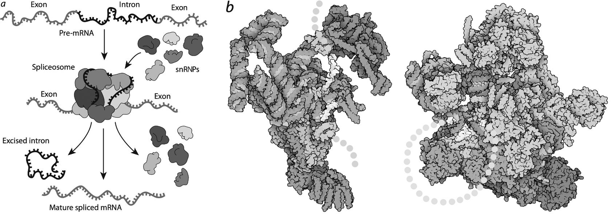
איור 4.12 א: הספלייסוזום בפעולה, גוזר ומדביק אקסונים ואינטרונים בתעתיקי RNA ראשוניים. "ריבונוקלאופרוטאינים גרעיניים קטנים", snRNPs, נוצרים ממולקולות RNA קטנות שאינן מקודדות ומחלבונים קושרי RNA הנצמדים אליהן. ב: צורת הקומפלקס המולקולרי משתנה באופן דרמטי במהלך תהליך השחבור. משמאל מוצג מבנה הספלייסוזום של שמרים כאשר הוא נקשר לראשונה לאינטרון של mRNA (מקטע המיועד להסרה), המסומן בשרשרת המנוקדת. מימין מוצג המבנה לאחר שהתרחשו תגובות השחבור, כשלולאת האינטרון עדיין מחוברת. התמונות ב-ב' באדיבות דיוויד גודסל.
שחבור האקסונים מתבצע על ידי מכלול של מולקולות RNA גרעיניות קטנות (snRNA) וחלבונים הנקרא ספלייסוזום (איור 4.12). חלק מהחלבונים מתאחדים עם מולקולות snRNA ליצירת מה שמכונה ריבונוקלאופרוטאינים גרעיניים קטנים (snRNPs, המבוטאים "סנרפס"). ושוב, אף שבביולוגיה מולקולרית מקובל מאוד לדבר על מבנים כאלה כאל מכונות, הספלייסוזום אינו דומה לשום מכונה שאנו בני האדם יצרנו. יש לו כמה חלקים חיוניים, כגון מולקולות ה-RNA, אך נדמה שחלק מהחלבונים משתנים ללא הרף — באים והולכים או מתארגנים מחדש בזמן שהמכלול מבצע את מלאכתו. סבורים כי אופי רב-פנים זה משקף את המגוון העשיר של המשימות שעל הספלייסוזום לבצע: מבנה נוקשה ומוכתב מדי לא היה מעניק גמישות מספקת. לא זו בלבד שעל הספלייסוזום לבצע משימות שונות על אותו תעתיק גן ברקמות שונות, אלא שהוא עשוי להידרש לשנות את פעילותו במהירות בתגובה לשינוי חדש כלשהו בסביבת התא — למשל, אות חדש המשודר מפני השטח של התא. משפחה אחת של חלבונים המעורבים בשחבור בבעלי חיים רב-תאיים נקראת "חלבוני SR", שיש להם מתחם הנקשר ל-RNA ואזור בלתי-מסודר המכיל שני סוגים בלבד של חומצות אמינו (ארגינין וסרין) החוזרים שוב ושוב ברצף חסר סדר. אופן פעולתם של חלבוני SR בתוך המכלול יכול להשתנות באמצעות זרחון: אנזימים אחרים יכולים, אם תרצו, לתכנת אותם מחדש.
חלק ניכר מבקרת השחבור — הבחירה, אם תרצו, כיצד לתפור את האקסונים בחזרה זה לזה — מושג באמצעות קשרים בין RNA לבין מה שמכונה חלבונים קושרי RNA (RNABPs), שעושים בדיוק את מה ששמם מרמז. חלבונים אלה מהווים רשת שלמה נוספת על גבי זו המבקרת את פעילות הגנים עצמה, ומארגנים את תעתיקי ה-RNA בדרכים שונות ברקמות שונות. אנו מעריכים כיום שישנם כ-1,500–1,900 סוגים של חלבוני RNABP בתאי אדם — הם מהווים, לצד חלבונים גלובולריים מסיסים וחלבוני ממברנה, קבוצה עיקרית שלישית, שעצם קיומה לא נחזה עד לפני שנים ספורות בלבד.
קשה לפענח את חוקי רשת ה-RNABP. רבים מהחלבונים הללו מגלים בררנות מועטה בלבד באשר למולקולות ה-RNA שאליהן הם נקשרים: הם מתירניים למדי בבחירת שותפיהם, בין היתר משום ששוב, הם מכילים אזורים בלתי-מסודרים רבים. נראה, באופן מפליא, שלכמה חלבוני RNABP יש תפקידים כפולים. נוסף על קשירה ל-RNA, הם עשויים לפעול כאנזימים מטבוליים רגילים: עדות ברורה מכל לכך שאיננו יכולים לשייך לחלבונים תפקידים קבועים בקלות דעת. החלבון אקוניטאז, המזרז שלב במעגל קרבס של תגובות מטבוליות, יכול להחליף כובע ולהפוך ל-RNABP המווסת צריכת ברזל בתגובה למחסור בברזל. אי-הסדר המובנה שלהם הוא שמעניק לחלבוני ה-RNABP את היכולת הזו לעבוד ב"עבודה צדדית".
נראה שחלק מחלבוני ה-RNABP פשוט מתקהלים יחד עם מולקולות RNA לגושים הנקראים גרגירי ריבונוקלאופרוטאין (RNP), הנוצרים בתאים בתגובה לעקה וממלאים מגוון תפקידים בחילוף חומרים, בזיכרון ובהתפתחות. גרגירי עקה כאלה יכולים לבודד ולשמור חלבונים שאינם נחוצים במהלך תגובת התא לאתגר הניצב בפניו, אך עשויים להידרש מיד עם חלוף העקה, כגון חלבונים המעורבים בגדילה ובחילוף חומרים. גרגירי העקה מאפשרים להעמיד תפקודים אלה בהמתנה בזמן שהתא מתמודד עם המשבר המיידי. היווצרותם של גרגירי RNP אינה דומה כל כך לתהליך הרכבה דמוי לגו, אלא קרובה יותר להיפרדות טיפות חומץ בשמן כאשר רוטב לסלט נפרד למרכיביו — תהליך הנקרא הפרדת פאזות נוזל-נוזל, שכפי שנראה בהמשך הוא דרך נפוצה שבה תאים מקבצים יחד מגוון ממרכיביהם. נוכח ההרכב הרופף והלא-ספציפי-למדי של גרגירי העקה, לא תופתעו לשמוע שרבים מהחלבונים המעורבים ביצירתם הם בלתי-מסודרים.
חלבוני RNABP קשורים למחלות שונות, ובייחוד להפרעות ניווניות של מערכת העצבים כגון טרשת אמיוטרופית צידית (מחלת הנוירון המוטורי או מחלת לו גריג) וניוון שרירים מיוטוני. חלבון RNABP אחד, הנקרא RBFOX2, הוא מווסת מפתח של שחבור חלופי במערכת העצבים, אך — בהדגמה לכך שחלבוני RNABP אינם נוטים להחזיק בתפקודים מוגדרים וייחודיים אלא מבצעים משימות התואמות את ההקשר שלהם — הוא גם מקיים אינטראקציה עם חלבון המווסת איתות אסטרוגן, ויכול להשפיע על מידת הניידות והפולשניות של תאים ברקמות, מה שמסביר מדוע מוטציות ב-RBFOX2 מעורבות בסוגים מסוימים של סרטן השחלות. בשל תפקידיהם במחלות, חלק מחלבוני ה-RNABP נחקרים ככיוונים טיפוליים. החלבון בעל השם המסורבל APOBEC3F הוא אחד מהם: סבורים שהוא מעורב בעריכת mRNA, והוכח שהוא מסוגל לעכב את שכפולו של נגיף האיידס HIV.
כ-90 אחוזים מהגנים שלנו מייצרים יותר ממולקולת mRNA אחת באמצעות שחבור חלופי. התופעה נפוצה במיוחד במוח, מסיבות שאינן מובנות במלואן. חלבונים הנקראים נוירקסינים, השולטים בהיצמדות בין תאים ומהווים מרכיב חיוני ביצירת סינפסות (הצמתים שבין תאי העצב), עוברים שחבור חלופי למספרים עצומים של צורות שונות. גן הנקרא Dscam1 מקודד חלבון המאפשר לתאי עצב לזהות זה את זה וכך להימנע מהתמזגות בתוך הסבך של אקסונים סיביים ארוכים (השלוחות המוארכות דמויות הגדילים של תאי העצב, הנושאות את האותות החשמליים שלהם כמו חוטי חשמל).7 סבורים ש"איזופורמים" שונים של החלבון Dscam1 מיוצרים באקראי באמצעות שחבור חלופי, ושהם פועלים כתוויות שרירותיות על פני שטח התא המבחינות בין אקסון אחד למשנהו. בזבוב הפירות נצפו כמעט עשרים אלף וריאנטים שונים משחבור חלופי של החלבון Dscam1 — כולם מגן יחיד. (אם כי לא ברור לכמה מהם יש בפועל תפקוד ביולוגי.)
בדרך זו, מכעשרים אלף גנים, התאים שלנו יכולים לייצר בין שמונים אלף לארבע מאות אלף חלבונים שונים. העובדה שהמספר עדיין כה לא ודאי מעידה עד כמה רב מה שעדיין איננו מבינים על הפרוטאום האנושי. שחבור חלופי ופוליאדנילציה (עמ' 121) של mRNA מראים שמתרחשת לפחות אותה מידה של בקרה לאחר שהשעתוק של גן כבר החל — כלומר, בדרך מ-RNA לחלבון — כפי שמתרחשת לפני שהשעתוק מתבצע, כאשר ניתן להגביר או להנמיך אותו במעורבותם של אתרי בקרה על ה-DNA עצמו.
חלבונים שעברו שחבור חלופי הם מרכיבים חיוניים בארגז הכלים המולקולרי שלנו, והם מעורבים בעיקר בתהליכים המרכזיים ביותר לפעולתם של אורגניזמים מורכבים: איתות, תקשורת בין-תאית ובקרת ההתפתחות. הודות למנגנוני בקרה, השחבור הוא ספציפי לרקמה. לסוגי התאים השונים אין רק רפרטואר שונה של גנים המופעלים ומושתקים, אלא גם מערך שונה של חלבונים המיוצרים מהם. אין פלא, אפוא, ששחבור חלופי נפוץ ביצורים איקריוטיים רב-תאיים בעלי סוגי רקמות רבים, אך נפוץ הרבה פחות באיקריוטיים חד-תאיים (שלא לדבר על פרוקריוטיים).
מודולים הרעיון שמבנה החלבון מקודד ברצף הגן המקביל לו הוא, אפוא, מטעה ביצורים כמונו, שבהם מתרחש שחבור חלופי בשפע. רצפי גנים אינם מקודדים בדרך כלל חלבון ספציפי בעל צורה ספציפית. במקום זאת, הם משמשים כמשאבים לייצור משפחות של חלבונים. אבל לשם מה לעשות זאת מלכתחילה? לעיתים קרובות נאמר שאחד היתרונות של שחבור חלופי הוא שמקבלים חלבונים רבים במחיר (גנטי) של אחד. מה שנדון לעיתים רחוקות יותר הוא כיצד דבר כזה יכול בכלל להיחשב ליתרון, אם חלבונים פועלים רק משום שהמבנה שלהם מפוסל בעדינות כך שיתאים לתפקודם. מה אפשר להרוויח מלקיחת החלקים הללו וערבובם מחדש? אולי תצליחו למצוא דרך אחרת להרכיב את גלגלי השיניים של שעון שווייצרי, אך ספק רב אם הוא יוכל אז להראות את השעה. לא, שחבור חלופי צפוי להביא תועלת של ממש רק כאשר פעולתו של החלבון אינה רגישה באופן קיצוני לצורתו הכוללת. אין פלא, אפוא, ששחבור חלופי נראה כשלוב יד ביד עם אי־סדר בחלבונים. מחקר אחד מצא שכ-80 אחוזים מהחלבונים העוברים שחבור חלופי הם חסרי סדר באופן חלקי או מלא. וכפי שראינו, גם החלבונים המווסתים את השחבור נוטים להכיל מידה רבה של אי־סדר. הסיבה לכך שערבוב מחדש מוליד חלבונים שעדיין מסוגלים לעשות דבר־מה מועיל היא שרוב חלקיהם, המקודדים לעיתים באקסונים בודדים של mRNA, הם למעשה מודולים המסוגלים להתקפל באופן עצמאי ולהעניק תפקוד כלשהו. יחידות מודולריות אלה נקראות מתחמים (domains), וכל אחת מהן דומה למדי למיני־חלבון בפני עצמו, שאורכו נע בדרך כלל בין 50 ל-250 חומצות אמינו. למעשה, זהו יותר מדמיון בעלמא: לרבים מן המתחמים המצויים בחלבונים מרובי־המתחמים המאפיינים יצורים רב־תאיים (מטזואה) יש מקבילות בקרב החלבונים חדי־המתחם של חיידקים. נראה שכאשר החיים הפכו לרב־תאיים ומורכבים, האבולוציה לא כל כך מצאה חלבונים חדשים יש מאין, אלא הרכיבה חלבונים קיימים לכדי מבנים מורכבים בעלי תפקודים חדשים. חלבונים מרובי־מתחמים מהווים כ-80 אחוזים מהפרוטאום שלנו. אולם ספק אם הייתם מנחשים זאת מעיון בבנק המידע של החלבונים (Protein Data Bank), המאגר הבין־לאומי של מבני חלבונים ידועים. מדוע? משום ששני שלישים מהמבנים במאגר המידע הם חדי־מתחם – דומים יותר לחלבונים חיידקיים. ושוב, מדוע? משום שזהו סוג המבנה ששיטות הקריסטלוגרפיה בקרני רנטגן מתאימות ביותר לפענוחו. כפי שאמרתי: איננו חוקרים את מה שיש, אנו חוקרים את מה שאנו יכולים לחקור. הרכבת חלבונים באופן מודולרי באמצעות אקסונים ושחבור חלופי יוצרת שפע של הזדמנויות להפקת גרסאות חדשות, שהברירה הטבעית יכולה לנפות מתוכן את המועילות. "המצאת" חלבון חדש מאפס היא אתגר אדיר, נוכח המספר האסטרונומי של הדרכים שבהן אפשר לסדר עשרים חומצות אמינו בשרשראות ארוכות, והסבירות שרובן יניבו ג'יבריש מולקולרי. אחד מעקרונות המפתח של האבולוציה הוא: אם מצאת פתרון טוב, השתמש בו שוב! אם חלבון פרימיטיבי מתקפל באופן אמין ויציב למבנה בעל תפקוד ביוכימי רב־ערך, הגיוני הרבה יותר שהאבולוציה תשמור אותו בארגז הכלים שלה ותאלתר עליו, במקום לנסות לבנות הכול מחדש. נראה כי אלתור כזה שינה לעיתים קרובות את רצף חומצות האמינו של המתחם במידה ניכרת, אך בלי לשנות באופן משמעותי את מבנה המתחם עצמו. לחלופין, רצפי חלבון שונים לחלוטין עשויים היו למצוא את דרכם אל אותו מבנה מתחם באופן בלתי תלוי, בדיוק משום שהוא הוכיח את עצמו כיציב ומועיל. מחקר אחד מצא כי למעלה מרבע מכל מבני המתחמים המובחנים בחלבונים מרובי־מתחמים הופיעו, ככל הנראה, באופן בלתי תלוי כמה פעמים במהלך האבולוציה. מוטיב נפוץ אחד נקרא חבית בטא (beta-barrel), והוא מורכב ממקטעי שרשרת היושבים במקביל ומקושרים ביניהם בקשרי מימן בעודם מתפתלים סביב ציר מרכזי, באופן המזכיר סל קלוע או בידוד של כבל קואקסיאלי (איור 4.13). חביות בטא מופיעות במגוון חלבונים, כגון פורינים (porins) המספקים תעלות למעבר יונים ומולקולות קטנות דרך ממברנות התא. מבנה חבית הבטא נמצא בחלבונים שונים שאין ביניהם כמעט שום דמיון ברצף. חלבונים מרובי־מתחמים יכולים לענות על כמה דרישות בעת ובעונה אחת, כאשר כל מתחם ממלא חלק מן התפקיד. לדוגמה, ראינו שלחלבוני ממברנה יש בדרך כלל גבעול הנשתל בתוך הממברנה, המחובר לחלק מסיס במים הבולט החוצה ומזרז תהליך כימי. באופן כללי, מקטעי השרשרת המקשרים בין מתחמים הם חסרי סדר, משום שאין חשיבות רבה למבנה שלהם כל עוד אינם מתקפלים לצורה נוקשה כלשהי שתגביל את האופן שבו המתחמים יכולים להיארז ולקיים אינטראקציות זה עם זה.
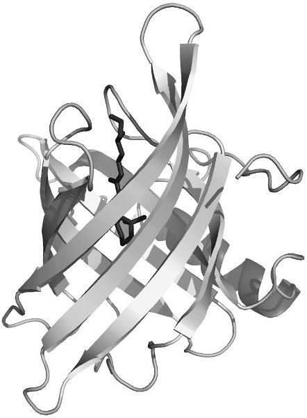
איור 4.13 חבית הבטא – מוטיב מבני נפוץ בחלבונים מודולריים. התמונה באדיבות GFDL.
לפי תפיסה זו, האבולוציה של חלבונים ביצורים רב־תאיים אינה כל כך עניין איטי של המתנה למוטציות גנטיות אקראיות שיחליפו חומצת אמינו אחת באחרת כדי לראות איזו השפעה תיווצר. תחת זאת, היא מתבטאת בערבוב מחדש של מודולים מתפקדים קיימים ליצירת מולקולות מרובות־מתחמים בעלות פוטנציאל חדש – אסטרטגיה שסיכוייה להניב תוצאות מוצלחות גבוהים הרבה יותר. פיצול הגן לאקסונים יכול להקל על החיפוש הזה, במיוחד אם כל אקסון מקביל למתחם יחיד (אף שהמידה שבה הדבר אכן מתקיים עודנה שנויה במחלוקת). במילים אחרות, ה"יחידה" של האבולוציה המולקולרית כאן אינה באמת זוג הבסיסים של ה-DNA או חומצת האמינו של החלבון, ואף לא הגן עצמו, אלא היא מופיעה בקנה מידה שבתווך בין השניים: המודול של המתחם. נראה כי הערבוב הזה, ולא המוטציה האיטית של רצפי הבסיסים הראשוניים, הוא שהניע את האבולוציה של בעלי החיים. "הופעתם של בעלי החיים, ועל אחת כמה וכמה הופעתם של בעלי החוליות, נקשרו להופעתם של צירופי מתחמים חדשים", כתבו המומחה היפני לביואינפורמטיקה מסומי איטו (Masumi Itoh) ועמיתיו ב-2012. נראה כי תמורה זו של מתחמים הולידה את סוגי החלבונים הדרושים לתזמור התנהגויות התאים האופייניות לחיים רב־תאיים: היכולת להיצמד זה לזה, לתקשר זה עם זה, ולהתמיין לצורות מתמחות. בהמשך נראה כיצד כל אחת מהיכולות הללו תורמת לתכונות המיוחדות של בעלי חיים גדולים כמונו. מחקרים על אורגניזמים אוקריוטיים חד־תאיים השייכים לקבוצה הידועה כהולוזואה (Holozoa), שכללה כמה מקרובי המשפחה הקרובים ביותר של בעלי החיים הרב־תאיים, הראו שרבים מהשינויים בגנים שהתרחשו כנראה במהלך המעבר להתנהגות רב־תאית כרוכים בערבוב מחדש של מתחמי חלבון במשפחות גנים קיימות. כפי שאמר פרנסואה ז'קוב ב-1977, האבולוציה היא מאלתרת, ו"לאף אחד מהחומרים העומדים לרשות המאלתר אין תפקוד מדויק ומוגדר. בכל אחד מהם אפשר להשתמש בשלל דרכים שונות". לפיכך, הסביר ז'קוב, "חידושים צומחים מתוך חיבורים שלא נראו קודם לכן בין חומרים ישנים. ליצור פירושו לצרף מחדש". הדבר נכון לגבי חלבונים כשם שהוא נכון לגבי הרשתות המולקולריות של התא, ולגבי התאים עצמם. כדי להעלות את רמת המורכבות, הטבע כמעט אינו זקוק לבנייה מאפס. ובכל זאת, יש כאן חידה מסוימת: מדוע טמון בחומר הישן הזה מלכתחילה פוטנציאל צירופים עשיר כל כך, ומדוע הוא ניחן באפשרויות החורגות הרחק מעבר לדרישות המיידיות. נדמה שברגע שיש בידינו המרכיבים הבסיסיים של החומר החי, הכול אפשרי. אינני חושב שאנו מופתעים מכך די הצורך. עם זאת, העובדה שלמרכיבים אכן יש אופי כזה – ובפרט, שחלבונים רבים הם מודולריים, בעלי צורה רפויה ומסוגלים לקיים אינטראקציות מתירניות – היא אולי מה שמאפשר מלכתחילה את הופעתם ואת התפתחותם האבולוציונית של אורגניזמים מורכבים. יצירתם של איחודי חלבונים חדשים באמצעות ערבוב מתחמים נראית כעומדת בסתירה לתפיסה הרווחת שלפיה חלבונים עברו אופטימיזציה על ידי הברירה הטבעית כדי להיקשר באופן בררני ובטוח לשותף יחיד ומיועד. אולם אילו זה היה תמיד המצב, קשה לראות כיצד הייתה האבולוציה יכולה להתרחש ברמת רשתות האינטראקציה בין חלבונים – שכן אז לא היה אפשר ליצור איחודים חדשים אלא במקרה הבלתי סביר בעליל שבו שני השותפים, שהיו זרים זה לזה קודם לכן, מתאימים זה לזה במקרה באופן מושלם. במקום שקשרים חדשים ברשת יהיו בררניים וחזקים באופן מיידי, נראה שנגזר עליהם להתחיל כמתירניים וחלשים. למעשה, חלבונים מקיימים התקשרויות חלשות כאלה כל הזמן. כאשר לשני חלבונים יש תפקיד שותפות מוגדר היטב – למשל, קשירה בררנית לצורך העברת אות כלשהו – היינו מצפים למצוא אותם בריכוזים דומים ובאותו מקום בתא. אך מתברר שהתקשרויות רבות בין חלבונים מתרחשות במקום שבו יש פער עצום – אולי מאה לאחד – בכמויותיהם היחסיות. במקרים כאלה, סביר להניח שההתקשרויות הן אקראיות ואינן נושאות כל "משמעות" עבור התא; אם הן מופרעות, אין לכך השלכות שליליות. הן מתרחשות משום שהיצמדות הדדית טבועה בעצם טבעם של החלבונים. אולם אין פירוש הדבר שאינטראקציות חלבונים חלשות ובלתי פרופורציונליות בעליל שכאלה הן חסרות חשיבות לחלוטין. אדרבה, יש חוקרים החושדים שכך בדיוק מתרחשים חידושים אבולוציוניים: באמצעות מפגשים אקראיים שיש להם השפעה מספקת כדי שהברירה הטבעית תבחין בהם ותשכלל אותם. הביולוג של התא מנואל לאונטי (Manuel Leonetti) מקליפורניה ועמיתיו הציעו שרשת האינטראקציות בין חלבונים עשויה לכלול מתחם שזכה לכינוי "אבולבוזום" (evolvosome): מעין צומת ליצירת שידוכי חלבונים חדשים, שעשויים בצירוף מקרים מוצלח להפוך למועילים עבור התא. כשם שאי־סדר במבנה החלבון יוצר גמישות באשר למה שחלבון יכול לעשות לבדו, כך התקשרויות אקראיות באבולבוזום עשויות לפתוח אפשרויות חדשות למה שחלבונים יכולים לעשות יחד. נראה כי חלק ניכר מ"חיפוש" זה אחר צורות וצירופים חדשים התרחש בקרב חלבונים הפועלים כגורמי שעתוק (TFs), כלומר חלבונים המווסתים את השעתוק של DNA ל-RNA. איחודים חדשים של גורמי שעתוק עשויים ליצור אינטראקציות בין החלקים השונים של רשתות הגנים שהם מווסתים. גנים המקודדים גורמי שעתוק מהווים למעלה מ-10 אחוזים מהגנום שלנו: מוכרים כשלושת אלפים מהם. מעבר לאמירה שהם משנים את ביטוים של גנים, קשה לצאת בהצהרה כללית כלשהי על האופן שבו הם מבצעים את עבודתם. חלקם נצמדים לרצפי DNA ספציפיים; אחרים נינוחים יותר באשר למקטעי ה-DNA שאליהם הם נקשרים, מה שמעורר את השאלה כיצד הם בכלל מסייעים ליצור תגובה בררנית בביטוי גנים. גורם שעתוק אחד, הנקרא חלבון קושר תיבת TATA (ובקיצור TBP), נצמד ליחידה נפוצה המכילה את הרצף TATA באזור הפרומוטר של גנים אוקריוטיים שונים. הקשירה של TBP לפרומוטר של גן היא אחד הצעדים הראשונים בהתנעת השעתוק. נראה שהיא מסייעת בדרך כלשהי לאנזים העיקרי המייצר RNA (הלא הוא RNA פולימראז II) להיקשר ל-DNA ולהתחיל במלאכתו. אולם TBP מקיים אינטראקציה עם מגוון גורמי שעתוק וחלבונים אחרים, כך שנראה שישנו כוח עבודה מגוון המעורב בהתנעת השעתוק. כלל לא ברור שאנשי הצוות הזה חייבים להיות תמיד אותם שחקנים, או שהם בררניים במיוחד בבחירת עמיתיהם לעבודה. המנגנון המולקולרי של הבקרה עשוי להיות רפוי להפליא ומבולגן למראה, וכנראה יש סיבה טובה לכך שהוא פועל בדרך זו.
פיגומים אחד התפקידים החשובים ביותר של חלבונים בבעלי חיים רב-תאיים (מטזואה) אינו אפוא לזרז תגובה מסוימת כלשהי כדרכו של אנזים, אלא לתווך בין המסלולים המולקולריים נושאי המידע של תאינו, ליצור ביניהם שיח צולב ולטוות קשרים חדשים. אולם כיצד נוצרים החיבורים הללו באופן אמין בתוך ההמולה הביוכימית הצפופה של התא, בשעה שכל תא מכיל, לפי ההערכות, כמיליארד מולקולות חלבון? דרך אחת היא פשוט לכנס את החלבונים הרלוונטיים יחדיו באותו אזור במרחב: לערוך מעין מפגש פיזי. ישנה מחלקה של חלבונים הנקראים חלבוני פיגום (SPs), שזהו בדיוק תפקידם. באופן מסורתי, חלבוני פיגום נתפסו כמולקולות בעלות עמדות עגינה עבור כמה חלבונים אחרים: שדכנים, פשוטו כמשמעו. הרעיון במקרה כזה הוא שעגינתה של אחת ממולקולות המטרה של חלבון הפיגום תשרה שינוי אלוסטרי כלשהו שיעביר אות למטרה אחרת הקשורה אליו, כך ששתי המטרות אינן צריכות לקיים אינטראקציה ישירה זו עם זו. ספרי לימוד אוהבים להציג איורים של חלבוני פיגום עם שקעים המעוצבים כך שיתאימו למטרותיהם במתכונת של מנעול ומפתח (איור 4.14). אולם – ואני חושד שכעת כבר לא תופתעו לשמוע זאת – זו אינה תמונה טובה של האופן שבו חלבוני פיגום פועלים בדרך כלל. אדרבה, לרבים מהם יש מידה רבה של אי-סדר מובנה. וכמובן שכך יהיה! במובן מסוים, כל תכליתם של חלבוני פיגום היא שהם מצטיינים בטוויית קשרים חדשים בין מסלולי איתות, ובכך פותחים אפשרויות התפתחותיות חדשות. הם אינם תפורים לפי מידה, אלא טובים באלתור, לעיתים קרובות באמצעות ערבוב מחדש של מתחמי הקישור שברשותם. באמצעות בידודם של חלבונים מסוימים, חלבוני פיגום יכולים גם לפעול לבידוד מסלולים מפני שיח צולב מפריע. על פני השטח של התא, הם מסייעים לתווך תקשורת הן בין תאים והן בתוך התא פנימה. חלבון פיגום הנקרא קורטקטין (cortactin), למשל, פועל כמעין גשר בין תא אחד למשנהו, ואפשר להפעיל או לכבות אותו באמצעות שינוי מצב הזרחון שלו. נוסף על אספקת מתגים להפעלה או לכיבוי של אות או תכונה כלשהם, חלבוני פיגום יכולים גם לכוונן את העוצמה כלפי מעלה או מטה, כאשר החוגה מסובבת על ידי קישורן של מטרות אחרות (ראו תיבה 4.1).
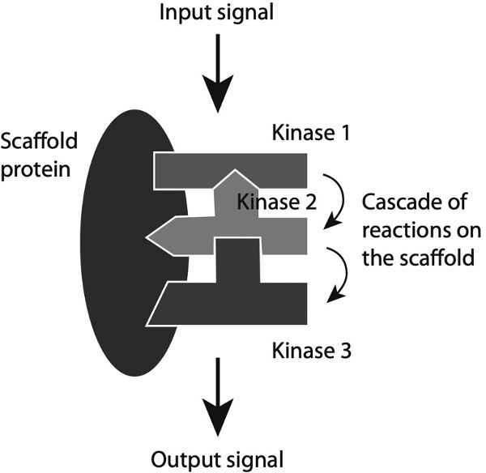
איור 4.14 התפיסה הרווחת בספרי הלימוד של חלבון פיגום מציגה אותו כבעל אתרי קישור המעוצבים עבור מטרות מסוימות, מה שמאפשר לו לשמש מעין לוח מעגלים אלקטרוני שעליו אותות יכולים לנוע בין המולקולות הקשורות (לעיתים קרובות קינאזות). אולם חלבוני פיגום הם רק לעיתים רחוקות מפוסלים ובררניים כל כך באינטראקציות שלהם.
באופן מאלף, ביולוגים מולקולריים מתייחסים לעיתים קרובות לפעולתן של מולקולות צומת (hub) כגון חלבוני פיגום כאל "גיוס". הם עשויים לומר שחלבון פיגום "מגייס" את מטרותיו, כאילו הוא משגר קריאה המזעיקה את המולקולות האחרות בריצה. שוב, השפה הזו המייחסת סוכנות ורצון מטשטשת פער בהבנה, שכן לחלבוני פיגום אין שום יכולת כזו לשדר זימון למולקולות הסובבות אותם. זאת ועוד, חלבוני פיגום הושוו לעיתים קרובות ללוחות מעגלים מסוג "חבר והפעל" (plug-and-play): מחברים את הרכיבים הנכונים, והנה יוצא האות המבוקש. אך שוב, מולקולות אינן פועלות כך. הן חבורה רועשת ואקראית, ולא זו בלבד, אלא שהאיחודים שהן יוצרות מחזיקים מעמד רק לעיתים רחוקות זמן רב בטרם יתפרקו שוב. הרהור קצר יראה שהרעיון שלפיו חלבון פיגום צריך למצוא שלוש או ארבע מטרות ולהחזיק בהן בעת ובעונה אחת כדי לבצע את מלאכתו הוא חסר שחר. ואכן, מכלולים מסודרים להפליא כאלה, שבהם כל השותפים נוכחים ועומדים הכן, מעולם לא נצפו באמת. העובדה היא שאנחנו פשוט לא יודעים כיצד חלבוני פיגום פועלים באמת בסביבה הרועשת, הלא-ודאית והדינמית של התא. אולם בפרק הבא נראה כיצד רשתות מולקולריות כאלה התפתחו כך שלא יהיו קפדניות או בררניות מדי באשר לשאלה מי משודך למי – וכיצד, גם ללא דיוק כזה, תאינו עדיין מצליחים לגייס התנהגויות אמינות וצפויות.
קץ הסדר חשיבותו של אי-הסדר בחלבונים שלנו כמעט שלא זכתה להכרה לפני אמצע שנות התשעים של המאה העשרים. הביוכימאית שרה בונדוס ועמיתיה אמרו בשנת 2021 כי גם כיום, מאחר שעדיין קיימת הכרה מועטה בלבד בהוראה הבסיסית של ביוכימיה וביולוגיה של התא עד כמה נפוץ ומשמעותי הוא אי-הסדר בצורותיהם של חלבונים, ביולוגים מולקולריים וביולוגים של התא רבים כנראה אינם מודעים לו. ואולם, הם הוסיפו, פשוט אי אפשר להבין במלואו כיצד אותות מועברים ברחבי התא בלי להביא בחשבון את אי-הסדר הזה. יש בכך אירוניה, למען האמת, שבדיוק בתקופה שבה כלים ניסיוניים וחישוביים לפענוח מבנה החלבונים רכשו תחכום חדש המתגבר על רבות ממגבלותיהן של השיטות המסורתיות (כגון הצורך בגבישי חלבון גדולים), אנו מתחילים להבין שמבנה החלבון אינו מרכזי לתפקוד החלבון כפי שחשבנו בעבר – ובפרט, שרבים מן החלבונים שתפקידי הבקרה שלהם הם שמייחדים באמת אותנו ובעלי חיים מורכבים אחרים מצורות חיים פשוטות יותר נשענים על הדינמיות ואי-הסדר שלהם. "בעשורים האחרונים", אומרים אווה אנה גז'יבובסקה (Ewa Anna Grzybowska) ועמיתיה,
חזינו בשינוי פרדיגמה חשוב – מן התמונה הסטטית, שבה רק חלבונים מקופלים היטב בעלי מתחמים מוגדרים היו מסוגלים לקיים אינטראקציה ולתפקד – לתמונה דינמית ומורכבת הרבה יותר, שבה פלסטיות קונפורמצייתית [יכולת לשנות צורה] נדרשת לתפקוד מלא. . . . אי-סדר מובנה הוא חיוני לפלסטיות הזו.
התמורה הזו אינה חלה רק בתמונתנו לגבי טיבם של חלבונים; היא יורדת אל לב-ליבו של האופן שבו החיים פועלים. כפי שראינו, הנרטיב הבסיסי שקישר בין גנים לחלבונים בימיה הראשונים של הגנטיקה המולקולרית גרס כי רצפי גנים מתכנתים תפקוד לתוך החלבונים שהם מקודדים, ועושים זאת באמצעות קביעת מבנה וצורה מולקולריים מסוימים. המידע החשוב מוטבע אפוא בחלבון, וכל שעליו לעשות הוא למצוא את השותף שעבורו הוא "תוכנן" ולבצע את מלאכתו באופן מדויק, דמוי מכונה. חלק מהחלבונים, כגון אנזימים, עושים דבר דומה מאוד לכך. אולם שחבור חלופי, האופן שבו הוא מבוקר, ותפקידו של אי-הסדר במתן אפשרות ליצירת רשתות חלבונים מתירניות, משמעותם יחדיו היא שלעיבוד המידע של התא – אם נוכל, בזהירות המתבקשת, להשתמש באנלוגיה החישובית הרופפת הזו – אין הארכיטקטורה שחשבנו שיש לו (ראו תיבה 4.2). המשמעות שיש לחלבון עבור התא המאכסן שלו משתנה בהתאם למצבו של התא כולו, ולפיכך היא נעדרת, פשוטו כמשמעו, מן הרצף של הגן המקודד אותו. למעשה, חיותו של התא הרב-תאי (המטזואי) תלויה בהותרת ה"משמעות" הזו פתוחה, כך שניתן יהיה לקבוע אותה באופן תלוי-נסיבות ולא באופן מוחלט ומוכתב מראש. ישנה אנלוגיה רופפת לאופן שבו פועלות הארכיטקטורות החישוביות המכונות רשתות עצביות (נוירוניות). אלו הן המערכות המשמשות לאלגוריתמים של למידת מכונה כגון AlphaFold, והן מורכבות מ"צמתים" המחוברים זה לזה, שבהם כמה אותות קלט מצמתים אחרים משולבים לפלט יחיד. אף אחד מתפקודי הצמתים אינו מוגדר מראש על ידי המתכנת. תחת זאת, הם נרכשים באמצעות "אימון" הרשת לתת את הפלט הנכון עבור מערכי נתונים רבים: לזהות נכונה תמונות של חתולים, למשל, בתוך תמונות דיגיטליות המכילות אותם. לעיתים קרובות קשה מאוד לומר מהו ה"תפקוד" של צומת נתון כלשהו ברשת לאחר שהמערכת אומנה כראוי. אך ודאי שאין שום משמעות לשאלה מהו תפקודו לפני האימון; תפקידו נקבע רק מתוך "ניסיון". אם מערך נתוני האימון שונה – כלבים ולא חתולים, נניח – אזי האופן שבו כל צומת מתפקד יהיה שונה. האנלוגיה רחוקה מלהיות מושלמת, ולו משום שחלבונים אינם זקוקים ל"אימון" כדי לרכוש את תפקידיהם: תאים יתקשו לשרוד אילו נזקקו לכך.8 אולם התפקידים הללו צומחים מתוך יחסי גומלין מורכבים בין ה"מידע" שברשותם מתוקף הרצף הגנטי שממנו נגזרו, העיבוד המתרחש במהלך השעתוק של ה-mRNA שלהם (כגון שחבור אקסונים), כל שינוי כימי שלאחר התרגום, והאופן שבו הם מקיימים אינטראקציה עם חלבונים ומולקולות אחרים בסביבתם הקרובה, בסיועה של הרבגוניות שאי-הסדר מספק. אפשר לומר שהחלבונים צריכים להמתין שיאמרו להם מה לעשות. בדרך זו, המצבים והפעולות של התא נבררים באמצעות שילוב של מידע מוכתב "מלמטה למעלה" יחד עם קלטים הן מתוך התא והן מחוצה לו. (ואל לנו לשכוח גם שאפילו המידע המגיע "מלמטה למעלה" מן הגנים מבוקר אפיגנטית מלמעלה למטה.) במילים אחרות, המערכת האקולוגית של המידע שבתוכה פועלים החלבונים אינה זו של תוכנית-אב גנטית סגורה, אלא היא פתוחה. אין שום היגיון בהנחה שרמה נתונה כלשהי של המערכת המורכבת הזו "שולטת" יותר מרמה אחרת. עלינו לחשוב על האופן שבו כל זה פועל בצורה אחרת.
תיבה 4.1: חלבוני פיגום במחלות
חלבוני פיגום (SPs) נוטים במיוחד לקשור את סוכני האיתות הנפוצים בכל מקום המכונים חלבוני קינאז (protein kinases). אחד הקינאזות הללו, הממלא מגוון תפקידים בחילוף החומרים, נושא את השם חסר ההשראה חלבון קינאז A (PKA); הוא התגלה ב-1968 על ידי הביוכימאים אדמונד פישר ואדווין קרבס, שזכו בפרס נובל לשנת 1992 על עבודתם. קיימות צורות שונות של PKA – הן מרכיבות משפחה – והן יכולות להיקשר לחלבוני פיגום המכונים AKAPs (A-kinase anchoring proteins – חלבוני עיגון של קינאז A), שלהם מוטיב קישור משותף להיצמדות לחלבוני PKA לצד מגוון מתחמים (domains) אחרים ללכידת חלבונים במסלולים אחרים. חלבוני פיגום כמו ה-AKAPs חשובים לתזמור חילוף החומרים, ונמצאו מעורבים במחלות מטבוליות כגון השמנת יתר וסוכרת מסוג 2 – וזו הסיבה לכך שלעבודתם של פישר וקרבס היו השלכות כה חשובות.
עם זאת, יכולתם של חלבוני פיגום לחווט מחדש מסלולים הופכת אותם לחרב פיפיות. נגיף האיידס HIV, למשל, מייצר חלבון פיגום המסוגל לשבש אסטרטגיית הגנה של הפונדקאי – דהיינו, ייצור של אנזים שיכול להשבית את שכפול הנגיף. חלבון הפיגום הנגיפי הוא תכסיס-נגד לניסיונו של הפונדקאי לבלום את הנגיף.
תיבה 4.2: מבט מחודש על הדוגמה המרכזית
כפי שנוסחה (מחדש) ב-1970, "הדוגמה המרכזית" (Central Dogma) של פרנסיס קריק קובעת שהמידע המקודד ברצפים של DNA ו-RNA יכול לעבור אל הרצפים של חלבונים, אך ברגע שהגיע לשם הוא אינו יכול "לצאת משם בחזרה": כלומר, אין בכוחו למצוא את דרכו חזרה אל תוך חומצת גרעין, והוא גם אינו יכול לעבור מחלבון אחד למשנהו. ואכן, איננו מכירים שום דרך שבה חלבון יכול לשנות באופן שיטתי את רצף ה-DNA.
כשכינה את הרעיון הזה בשם "הדוגמה המרכזית", קריק השליך (אולי) את הכפפה מבלי משים. שכן דוגמות מנוגדות בתכלית למדע, שבו חיוני להיות מוכנים לשנות את דעתכם. לא לכך התכוון קריק, שכן הוא תפס "דוגמה דתית" כאמונה נעדרת תמיכה ניסויית ישירה.9 ומאחר שסבר כי גם ההשערה שלו בדבר זרימת המידע בביולוגיה עדיין אינה מבוססת היטב באותו שלב על ראיות ניסוייות, הוא חש שאותו מונח מתאים גם כאן. היה זה ז'אק מונו שהעיר לו מאוחר יותר כי דוגמה משמעה אמונה ש"אין להטיל בה ספק".
כך או כך, מדענים רבים ביקשו למצוא פרצות בדוגמה המרכזית, לרוב באמצעות חיפוש אחר דוגמאות שבהן נראה כי המידע זורם בכיוון ההפוך. למרבה צערם, לא פעם הם מדברים למעשה על הגרסה המשונמכת של הדוגמה שהציג שותפו של קריק, ג'יימס ווטסון, שהיה זהיר הרבה פחות מבחינה אינטלקטואלית (ולא רק כאן). ווטסון אמר שהמידע נע בזרימה דו-שלבית וחד-כיוונית קפדנית מ-DNA ל-RNA לחלבונים. תפיסה זו בהחלט אינה נחשבת עוד לנכונה.
כתיאור בסיסי ותמציתי של האופן שבו מבני חלבונים מקודדים ברצפי DNA באמצעות הקוד הגנטי, הדוגמה המרכזית עדיין משרתת את מטרתה כיום. הבעיה היא שרואים בה – ובוודאי לכך התכוון קריק (שכן מדוע אחרת תהיה "מרכזית"?) – הרבה יותר מכך. מתייחסים אליה כאל הסבר לאופן שבו מידע נאגר ומועבר בביולוגיה בכללותה. הנרטיב שהיא מספרת הוא זה של ה-DNA כמאגר המידע של התא, ושל החלבונים כפלט הקריאה שלו. וזה, אני חושש, הוא (בביטויו העוקצני של הפיזיקאי וולפגנג פאולי) אפילו לא שגוי.
שכן כפי שראינו, הגנום – רצף ה-DNA – אינו מכיל בשום פנים ואופן את כל המידע הדרוש ליצירת התא או האורגניזם. כלל לא ברור מה פירוש הביטוי "כל המידע", אך מכל מקום המבנה של RNA ושל חלבונים אינו נקבע באופן ייחודי על ידי רצף ה-DNA שבמובן מסוים מקודד אותם; אדרבה, מבנים אלה מוכרעים לעיתים קרובות במעין שיתוף פעולה כלל-תאי, המושפע בעצמו מאותות המגיעים מתאים שכנים. לפיכך, הדוגמה המרכזית מתארת את "המערכת האקולוגית של המידע" של החיים לא יותר משמשאבי המידע שלי עצמי מתחילים ומסתיימים על מדפי הספרים שלי.
הנקודה האמיתית, כפי שקורה לעיתים כה קרובות בוויכוחים במדע (ומעבר לו), אינה מי צודק ומי טועה, אלא מה עמדותיהם אומרות על הערכים וההנחות היסודיים שלהם. ווטסון כנראה לא סילף את הדוגמה המרכזית משום שלא הבין ביולוגיה מולקולרית; אלא שעבורו, הקפדה מדעית הייתה חשובה פחות מרטוריקה. זרימת מידע חד-ממדית המתחילה ב-DNA חיזקה את המסר שלפיו, כפי שהוא ראה זאת, כל המידע בביולוגיה נובע מן הגנים. כפי שאומרת אוולין פוקס קלר, המסר האמיתי של הדוגמה המרכזית היה שהיא "הבטיחה מבנה ליניארי של השפעה סיבתית" בביולוגיה. אם היא שגויה, הרי ששם טמונה טעותה.